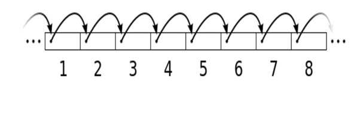
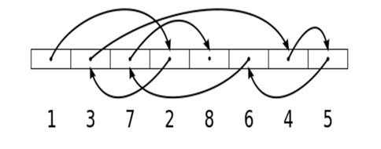

RA1. Acceso a ficheros¶
RA1
Desarrolla aplicaciones que gestionan información almacenada en ficheros identificando el campo de aplicación de los mismos y utilizando clases específicas.
Revisiones
| Revisión | Fecha | Descripción |
|---|---|---|
| 1.0 | 13-07-2026 | Adaptación de los materiales a markdown |
| 1.1 | 24-07-2026 | Ampliación con preguntas de autoevaluación |
1. Introducción¶
Un fichero o archivo es una unidad de almacenamiento de datos en un sistema informático. Es un conjunto de información (secuencia de bytes) organizada y almacenada en un dispositivo de almacenamiento (disco duro, memoria USB o un servidor en la nube). Los datos guardados en ficheros persisten más allá de la ejecución de la aplicación que los trata. La utilización de ficheros es una alternativa sencilla y eficiente a las bases de datos.
Características de un fichero
- Nombre: Cada fichero tiene un nombre único dentro de su directorio.
- Extensión: Indica su tipo (
.txtpara texto,.jpgpara imágenes, etc.). - Ubicación: Directorios (carpetas) dentro del sistema de ficheros.
- Contenido: Texto, imágenes, vídeos, código fuente, bases de datos, etc.
- Permisos de acceso: Se pueden configurar para permitir o restringir la lectura, escritura o ejecución a determinados usuarios o programas.
Tipos de ficheros
- De texto: Formato legible por humanos (
.txt,.csv,.json,.xml). Por ejemplo: un catálogo de especies en formato CSV o JSON. - Binarios: Formato no legible directamente (
.exe,.jpg,.mp3,.dat). Por ejemplo: fotografías de hojas y flores en alta resolución. - De código fuente: Contienen instrucciones escritas en lenguajes de programación (
.java,.kt,.py). - De configuración: Almacenan parámetros de configuración de programas (
.ini,.conf,.properties,.json). - De bases de datos: Se utilizan para almacenar grandes volúmenes de datos estructurados (
.db,.sql). - Historial: De eventos o errores en un sistema (
.log).
API para manejo de ficheros
java.nio (New IO) es una API que permite mejorar el rendimiento, así como simplificar el manejo de muchas operaciones. Funciona a través de interfaces y clases para que la máquina virtual Java tenga acceso a ficheros, atributos de ficheros y sistemas de ficheros. En los siguientes apartados veremos cómo trabajar con ella.
Formas de acceso
El acceso a ficheros es una tarea fundamental en la programación, ya que permite leer y escribir datos persistentes. Según sus características y necesidades, existen dos formas principales de acceder a un fichero:
Acceso secuencial
- Los datos se procesan en orden, desde el principio hasta el final del fichero.
- Es el más común y sencillo.
- Se usa cuando se desea leer todo el contenido o recorrer registro por registro. Por ejemplo: lectura de un catálogo de plantas línea por línea, o de un fichero binario de taxonomía registro a registro.

Acceso aleatorio
- Permite saltar a una posición concreta del fichero sin necesidad de leer lo anterior.
- Es útil cuando los registros tienen un tamaño fijo y se necesita eficiencia (por ejemplo, ir directamente a los datos de la planta número 100 de un fichero indexado).
- Requiere técnicas más avanzadas como el uso de
FileChannel,SeekableByteChanneloRandomAccessFile.

2. Gestión de ficheros y directorios¶
La gestión de ficheros y directorios se realiza a través de Path y Files.
Path
Representa una ruta en el sistema de ficheros (ej. /home/botanico/rosa.png o C:\herbario\docs\clasificacion.txt). Un objeto Path es una dirección y no significa que el fichero o directorio exista realmente en el disco.
| Método | Descripción |
|---|---|
Path.of(String) |
Crea un objeto Path a partir de un String de ruta, aunque puede admitir más parámetros Path.of(first, more...). |
toString() |
Devuelve la ruta como un String (se llama por defecto desde println). |
toAbsolutePath() |
Devuelve la ruta absoluta del Path. |
fileName |
Propiedad en Kotlin que devuelve el nombre del fichero o directorio final de la ruta (por ejemplo, el nombre de la planta o el documento). |
Ejemplo 1
El siguiente código demuestra cómo crear y mostrar distintos tipos de rutas (no intenta acceder a los ficheros o directorios, por tanto pueden existir o no):
import java.nio.file.Path
fun main() {
rutas()
}
fun rutas() {
// Path relativo al directorio del proyecto (carpeta de muestras)
val rutaRelativa: Path = Path.of("muestras", "orquidea.jpg")
// Path absoluto en Windows
val rutaAbsolutaWin: Path = Path.of("C:", "Herbario", "Especies", "Helechos")
// Path absoluto en Linux/macOS
val rutaAbsolutaNix: Path = Path.of("/home/botanico/jardin/flora_mediterranea")
println("Ruta relativa: " + rutaRelativa) // Muestra la ruta relativa
println("Ruta absoluta: " + rutaRelativa.toAbsolutePath()) // Ruta completa
println("Ruta absoluta Windows: " + rutaAbsolutaWin)
println("Ruta absoluta Linux: " + rutaAbsolutaNix)
}
Prueba y analiza el ejemplo
Prueba el código de ejemplo y verifica que la salida por consola es:
Ruta relativa: muestras\orquidea.jpg
Ruta absoluta: D:\kot\ficheros\muestras\orquidea.jpg
Ruta absoluta Windows: C:\Herbario\Especies\Helechos
Ruta absoluta Linux: /home/botanico/jardin/flora_mediterranea
Autoevaluación
Pregunta 1: ¿Cuál será el comportamiento del siguiente código al ejecutarse si en nuestro disco duro no existe físicamente ninguna carpeta llamada "datos" ni ningún archivo llamado "flor.txt"?
import java.nio.file.Path
fun main() {
val ruta = Path.of("datos", "flor.txt")
println("Ruta: $ruta")
}
A) El programa lanzará una excepción en tiempo de ejecución (NoSuchFileException) al intentar crear un objeto Path de un archivo que no existe en el disco duro.
B) El código se ejecutará correctamente y mostrará por pantalla: Ruta: datos\flor.txt (en Windows) o Ruta: datos/flor.txt (en Linux/macOS).
C) Se producirá un error de compilación porque el método Path.of() requiere obligatoriamente que se le pase un único String completo con las barras de separación.
D) El programa se ejecutará pero imprimirá un valor vacío (Ruta:), ya que el sistema de archivos no puede resolver la dirección.
Solución
❌ A) Un objeto Path representa únicamente una dirección lógica o ruta en el sistema de ficheros. Crear un objeto Path no interactúa con el disco duro ni verifica si el archivo real existe, por lo que no lanzará ninguna excepción en esta línea.
✅ B) El método Path.of junta los fragmentos de texto pasados como argumentos utilizando el separador de carpetas por defecto del sistema operativo del usuario. El código se ejecuta con éxito e imprime la ruta unificada de forma relativa, exista o no el archivo en el disco.
❌ C) El método de utilidad Path.of está sobrecargado y acepta múltiples argumentos de texto (un vararg de tipo String) para construir la ruta de forma segura e independiente de la plataforma, por lo que la sintaxis es totalmente válida.
❌ D) El objeto Path almacena la cadena de texto de la dirección estructurada en memoria. Al concatenarlo en el println, se llama automáticamente a su método .toString(), que devuelve la ruta formateada con los separadores correspondientes.
Pregunta 2: ¿Qué se mostrará por pantalla al ejecutar el programa en un ordenador con Windows?
import java.nio.file.Path
fun main() {
val ruta1 = Path.of("C:", "herbario", "fotos", "orquidea.jpg")
val ruta2 = Path.of("datos", "plantas.csv")
println("${ruta1.isAbsolute} - ${ruta2.isAbsolute}")
}
A) false - false
B) true - true
C) true - false
D) false - true
Solución
❌ A) Es errónea porque asume que ruta1 es relativa, ignorando que tiene la raíz del disco C: especificada de forma explícita.
❌ B) Es errónea porque asume que ruta2 es absoluta, pero al no contar con una letra de unidad o una barra diagonal inicial en sistemas Unix, el sistema operativo necesita el directorio de trabajo actual para poder resolverla.
✅ C) El método isAbsolute determina si una ruta es absoluta (es decir, si contiene toda la información necesaria para localizar el archivo sin depender del directorio de trabajo actual).
- ruta1 empieza con la raíz de la unidad en Windows (C:\herbario\...), por lo que es una ruta absoluta (true).
- ruta2 no especifica ninguna raíz y empieza directamente con una carpeta (datos\...), por lo que es una ruta relativa respecto a la raíz del proyecto (false).
❌ D) Es la opción invertida; confunde el comportamiento de las rutas absolutas y relativas.
Files
Es una clase de utilidad con las acciones (borrar, copiar, mover, leer, etc.) que podemos realizar sobre las rutas (Path). Algunos de sus principales métodos son:
| Método | Descripción |
|---|---|
exists(), isDirectory(), isRegularFile(), isReadable() |
Verificar la existencia y accesibilidad de un elemento botánico o carpeta. |
list(), walk() |
Listar el contenido de un directorio. |
readAttributes() |
Obtener atributos (tamaño del archivo de imagen, fecha de registro de la muestra, etc.). |
createDirectory() |
Crear un directorio. Solo crea el directorio final y espera que todo el "camino" hasta él ya exista. |
createDirectories() |
Crea un directorio y también los directorios padre si no existen (ej. crear /plantas/terrestres/helechos/). Es la forma más segura. |
createFile() |
Crear un nuevo fichero. |
delete() |
Borrar un fichero o directorio (lanza una excepción si el borrado falla). Lanza NoSuchFileException si el fichero o directorio no existe. También lanza DirectoryNotEmptyException si intentas borrar un directorio no vacío. Es más seguro usar deleteIfExists(). |
move(origen, destino) |
Mover o renombrar un fichero o directorio (por ejemplo, reclasificar una especie). |
copy(origen, destino) |
Copiar un fichero o directorio. Si el destino ya existe, se puede sobrescribir utilizando copy(Path, Path, REPLACE_EXISTING). Si se copia un directorio, no se copiará su contenido (el nuevo directorio estará vacío). |
Ejemplo 2
Partimos de una carpeta llamada muestras donde guardamos fotos, descripciones de texto y registros de audio de la naturaleza sin ningún orden. Este programa organizará automáticamente los archivos en subcarpetas según su formato (extensión) para que el herbario quede perfectamente estructurado.
Puedes descargar la carpeta del ejemplo comprimida desde el siguiente enlace: muestras.zip). La carpeta debe estar ubicada en la raíz del proyecto de IntelliJ (al mismo nivel que la carpeta
srcy que el archivobuild.gradle.kts).
import java.nio.file.Path
import java.nio.file.Files
import java.nio.file.StandardCopyOption
import kotlin.io.path.extension // Extensión de Kotlin para obtener la extensión
fun main() {
organizar()
}
fun organizar(){
// 1. Ruta de la carpeta de muestras botánicas a organizar
val carpeta = Path.of("muestras")
println("--- Iniciando la clasificación botánica en la carpeta: " + carpeta + " ---")
try {
// 2. Recorrer la carpeta desordenada y utilizar .use para asegurar el cierre de recursos
Files.list(carpeta).use { streamDePaths ->
streamDePaths.forEach { pathFichero ->
// 3. Solo nos interesan los ficheros de muestras, ignoramos subcarpetas
if (Files.isRegularFile(pathFichero)) {
// 4. Obtener la extensión del fichero (ej: "jpg", "txt", "mp3")
val extension = pathFichero.extension.lowercase()
if (extension.isBlank()) {
println("-> Ignorando fichero sin tipo: " + pathFichero.fileName)
return@forEach // Salta a la siguiente muestra
}
// 5. Crear la ruta de destino dentro de la carpeta correspondiente
val carpetaDestino = carpeta.resolve(extension)
// 6. Crear el directorio de destino de la categoría si no existe
if (Files.notExists(carpetaDestino)) {
println("-> Creando nueva sección para ficheros: ." + extension)
Files.createDirectories(carpetaDestino)
}
// 7. Mover la muestra botánica a su nueva ubicación clasificada
val pathDestino = carpetaDestino.resolve(pathFichero.fileName)
Files.move(pathFichero, pathDestino, StandardCopyOption.REPLACE_EXISTING)
println("-> Clasificando " + pathFichero.fileName + " en la carpeta (." + extension + ")")
}
}
}
println("\n--- ¡Clasificación del herbario completada con éxito! ---")
} catch (e: Exception) {
println("\n--- Ocurrió un error durante la clasificación de muestras ---")
e.printStackTrace()
}
}
Prueba y analiza el ejemplo
Prueba el código de ejemplo y verifica que la salida por consola es:
--- Iniciando la clasificación botánica en la carpeta: muestras ---
-> Creando nueva sección para ficheros: .txt
-> Clasificando flor.txt en la carpeta (.txt)
-> Clasificando arbusto.txt en la carpeta (.txt)
-> Creando nueva sección para ficheros: .jpg
-> Clasificando 20191106_071048.jpg en la carpeta (.jpg)
-> Clasificando 20191101_071830.jpg en la carpeta (.jpg)
-> Creando nueva sección para ficheros: .mp3
-> Clasificando pad-harmonious-and-soothing-voice-like-background.mp3 en la carpeta (.mp3)
-> Clasificando dark-cinematic-atmosphere.mp3 en la carpeta (.mp3)
-> Creando nueva sección para ficheros: .mp4
-> Clasificando 293968_small.mp4 en la carpeta (.mp4)
-> Creando nueva sección para ficheros: .pdf
-> Clasificando lorem-ipsum-1.pdf en la carpeta (.pdf)
-> Clasificando lorem-ipsum-2.pdf en la carpeta (.pdf)
--- ¡Clasificación del herbario completada con éxito! ---
Autoevaluación
Pregunta 3: ¿Qué ocurrirá al ejecutar este código si dentro de la carpeta muestras existe una carpeta llamada especies pero no contiene ningún fichero regular en su raíz?
import java.nio.file.Files
import java.nio.file.Path
fun main() {
val carpeta = Path.of("muestras")
Files.list(carpeta).use { streamDePaths ->
streamDePaths.forEach { pathElemento ->
if (Files.isRegularFile(pathElemento)) {
println("Fichero encontrado: ${pathElemento.fileName}")
} else if (Files.isDirectory(pathElemento)) {
println("Directorio encontrado: ${pathElemento.fileName}")
}
}
}
}
A) Se producirá un error de compilación porque Files.list solo puede listar ficheros, no carpetas.
B) El código se ejecutará sin problemas pero no mostrará nada por consola, ya que la subcarpeta especies está vacía de ficheros.
C) Se imprimirá por consola: Directorio encontrado: especies.
D) Se producirá una excepción en tiempo de ejecución porque Files.list entra de forma automática de manera recursiva en la carpeta especies y al estar vacía falla.
Solución
❌ A) Files.list lee y devuelve cualquier elemento presente en el nivel inmediato del directorio (tanto ficheros como carpetas), por lo que es totalmente válido y compila sin problemas.
❌ B) Aunque la carpeta especies no contenga ficheros en su interior, ella misma es un directorio que se encuentra en el primer nivel de muestras. Por tanto, el flujo sí la detectará al evaluar el segundo bloque condicional.
✅ C) Como especies es un directorio directo dentro de muestras, Files.list lo detectará en su primera pasada. Al no cumplir la condición de isRegularFile pero sí la de isDirectory, imprimirá por consola su nombre precedido por la etiqueta del prefijo.
❌ D) Files.list no es recursivo (esa es la función de Files.walk). Solo lista el contenido directo del nivel superior especificado, por lo que nunca intentará inspeccionar el interior de la carpeta especies de forma automática ni lanzará errores por ello.
Pregunta 4: ¿Qué problema ocurrirá si la subcarpeta png no existía previamente en el disco duro?
import java.nio.file.Files
import java.nio.file.Path
import java.nio.file.StandardCopyOption
fun main() {
val origen = Path.of("muestras", "rosa_nueva.png")
val carpetaDestino = Path.of("muestras", "png")
val destinoFinal = carpetaDestino.resolve(origen.fileName)
// Intento de mover el archivo directamente antes de validar la carpeta
Files.move(origen, destinoFinal, StandardCopyOption.REPLACE_EXISTING)
if (Files.notExists(carpetaDestino)) {
Files.createDirectories(carpetaDestino)
}
}
A) El programa compila y se ejecuta bien, ya que Files.move crea de manera automática todos los directorios que falten en la ruta de destino antes de trasladar el archivo.
B) Se lanzará una excepción de tipo NoSuchFileException (o similar de Entrada/Salida) en la línea del Files.move, impidiendo que el archivo sea trasladado.
C) El archivo rosa_nueva.png se renombrará en el disco duro perdiendo su extensión, pasando a llamarse simplemente png.
D) Se producirá un error de compilación porque las rutas de tipo Path siempre deben crearse con nombres absolutos antes de poder usar Files.move.
Solución
❌ A) A diferencia de Files.createDirectories(), el método Files.move no tiene la capacidad de crear carpetas intermedias ausentes. Requiere obligatoriamente que toda la ruta de carpetas de destino ya exista físicamente antes de ser invocado.
✅ B) Dado que la carpeta contenedora muestras/png no existe en el momento de invocar la mudanza, el sistema operativo no podrá resolver la ruta del archivo de destino intermedio, lo que provocará un fallo de E/S (NoSuchFileException o DirectoryNotEmptyException según el caso) que detendrá el programa.
❌ C) Para que se renombrase a png, la ruta de destino tendría que haber apuntado directamente a un archivo con ese nombre, pero en este código se está intentando usar .resolve(origen.fileName) lo cual busca explícitamente guardar el archivo dentro de una carpeta llamada png que no existe.
❌ D) Las operaciones de la clase de utilidad Files admiten perfectamente rutas relativas y absolutas, por lo que la sintaxis de las rutas no genera ningún fallo al compilar.
Técnicas para recorrer un directorio
Como hemos visto en el clasificador anterior, recorrer directorios para "mirar" o gestionar su contenido es clave. Aquí analizamos los diferentes métodos para hacerlo:
1. Files.list(path): Lista únicamente el contenido del directorio especificado sin acceder a las subcarpetas. Es ideal para operaciones superficiales (como nuestra clasificación anterior, donde solo queríamos trabajar a primer nivel).
-
Ventajas:
- Rápido y eficiente al no ser recursivo.
- Control preciso, operando solo en el primer nivel del directorio.
- Devuelve un
Streamde Java que permite usar operadores funcionales (filter,map, etc.) de forma segura con.use.
-
Inconvenientes:
- No explora subdirectorios.
- Para recorrer un árbol completo, se necesita implementar la recursividad manualmente.
2. Files.walk(path): Recorre un directorio y todo su contenido recursivamente. Entra en cada subcarpeta y en sus subcarpetas de manera sucesiva. Es extremadamente útil para búsquedas globales en el herbario (ej. buscar fotos de flores en cualquier rincón del proyecto, borrar reportes temporales o contar ficheros de registros).
-
Ventajas:
- Recorre árboles de directorios completos (recursivo) de forma muy sencilla.
- Extremadamente potente para búsquedas profundas o para aplicar operaciones en cascada.
- Devuelve un
Stream, permitiendo un filtrado muy expresivo.
-
Inconvenientes:
- Puede ser lento y consumir más memoria en estructuras gigantescas con miles de subcarpetas y ficheros.
- Es una herramienta excesiva ("overkill") si solo necesitas leer el nivel superior.
3. Files.newDirectoryStream(path): Es similar a Files.list(), pues lista solo el contenido inmediato. La diferencia es que no devuelve un Stream de Java 8, sino un DirectoryStream, una versión más antigua optimizada para bucles tradicionales for.
-
Ventajas:
- Utiliza un bucle for-each tradicional, que puede resultar más familiar a nivel sintáctico.
-
Inconvenientes:
- ¡PELIGRO! Requiere cerrar el recurso manualmente (
.close()). Si se olvida, provoca fugas de recursos (resource leaks). - Es menos expresivo que los Streams, ya que no se pueden encadenar operadores funcionales fácilmente.
- Es preferible utilizar
Files.list().use { ... }.
- ¡PELIGRO! Requiere cerrar el recurso manualmente (
Ejemplo 3:
Despues de clasificar nuestros archivos, queremos crear un listado para ver como ha quedado la estructura de nuestra carpeta muestras. Necesitamos listar cada una de las subcarpetas de clasificación y ver qué muestras hay dentro de cada una de ellas de forma jerárquica.
import java.nio.file.Path
import java.nio.file.Files
fun main() {
listado()
}
fun listado(){
val carpetaPrincipal = Path.of("muestras")
println("--- Estructura final del Herbario Digital con Files.walk() ---")
try {
Files.walk(carpetaPrincipal).use { stream ->
// Ordenar el stream para una visualización ordenada por categorías
stream.sorted().forEach { path ->
// Calcular profundidad para la indentación
// Restamos el número de componentes de la ruta base para que la raíz no tenga sangrado
val profundidad = path.nameCount - carpetaPrincipal.nameCount
val indentacion = "\t".repeat(profundidad)
// Determinamos si es una sección (categoría/directorio) o un registro (fichero)
val prefijo = if (Files.isDirectory(path)) "(CATEGORÍA)" else "(MUESTRA)"
// No imprimimos la propia carpeta raíz, solo su contenido clasificado
if (profundidad > 0) {
println("$indentacion$prefijo ${path.fileName}")
}
}
}
} catch (e: Exception) {
println("\n--- Ocurrió un error durante la generación del informe botánico ---")
e.printStackTrace()
}
}
Prueba y analiza el ejemplo
Prueba el código de ejemplo y verifica que la salida por consola es:
--- Estructura final del Herbario Digital con Files.walk() ---
(CATEGORÍA) jpg
(MUESTRA) 20191101_071830.jpg
(MUESTRA) 20191106_071048.jpg
(CATEGORÍA) mp3
(MUESTRA) dark-cinematic-atmosphere.mp3
(MUESTRA) pad-harmonious-and-soothing-voice-like-background.mp3
(CATEGORÍA) mp4
(MUESTRA) 293968_small.mp4
(CATEGORÍA) pdf
(MUESTRA) lorem-ipsum-1.pdf
(MUESTRA) lorem-ipsum-2.pdf
(CATEGORÍA) txt
(MUESTRA) arbusto.txt
(MUESTRA) flor.txt
Autoevaluación
Pregunta 5: ¿Por qué en el código del ejemplo anterior se realiza la resta path.nameCount - carpetaPrincipal.nameCount a la hora de calcular la indentación del informe?
A) Para evitar que la carpeta raíz "muestras" aparezca con sangrado (tabulación) en la consola y que los elementos que están directamente dentro de ella tengan una sola tabulación de profundidad.
B) Para que el programa conozca el tamaño físico en bytes del archivo antes de calcular el espaciado.
C) Para que el método Files.walk() sepa el límite máximo de carpetas en las que debe entrar (recursividad).
D) Es un paso obligatorio en Kotlin; si no se realiza esa resta matemática, el compilador genera un error de tipo al llamar al método .repeat().
Solución
✅ A) path.nameCount devuelve el número total de elementos que componen la ruta completa (por ejemplo, muestras/jpg/rosa.jpg tiene 3 componentes). Al restarle el tamaño de la ruta base (carpetaPrincipal.nameCount, que vale 1), conseguimos que la raíz tenga un nivel de sangrado de 0 y que el subnivel inmediato empiece en 1.
❌ B) El método nameCount solo cuenta el número de nombres o directorios que forman parte del camino de la ruta en formato de texto, no tiene relación con el tamaño físico del archivo en bytes del disco duro.
❌ C) La profundidad del recorrido de Files.walk() se configura de forma opcional mediante un parámetro numérico en el propio método. Realizar una resta aritmética en el flujo del forEach no altera los elementos que el stream ya ha recuperado del disco.
❌ D) El compilador de Kotlin solo requiere que el argumento que se le pase al método .repeat() sea un número entero (Int), independientemente de si este valor es una constante o el resultado de una resta.
Pregunta 6: En el código del ejemplo anterior, ¿qué sucedería en la visualización de la consola si eliminamos la condición if (profundidad > 0) antes del println?
A) El programa lanzará un error de ejecución (IndexOutOfBoundsException) debido a que la profundidad en la raíz dará un valor negativo.
B) Se imprimirá también la carpeta raíz en el informe de consola, mostrándose al inicio de la estructura como (CATEGORÍA) muestras.
C) El listado se mostrará de forma desordenada porque el stream no sabrá por qué elemento comenzar a ordenar.
D) No cambiará nada en absoluto en la salida por pantalla, ya que la carpeta base "muestras" no forma parte de los elementos que recorre Files.walk().
Solución
❌ A) El cálculo para la carpeta raíz da exactamente 0 de profundidad (1 - 1 = 0), por lo que es un número entero válido y no generará ningún error de índice fuera de rango.
✅ B) La carpeta base del recorrido (muestras) es el primer elemento que entrega Files.walk(). Al no tener la restricción de profundidad > 0, se procesará normalmente, aplicando una indentación de 0 tabulaciones e imprimiendo su nombre de directorio al inicio.
❌ C) El orden del listado está garantizado por la llamada previa a .sorted(), por lo que quitar o poner una condición de impresión en el paso final no altera el orden de los elementos del stream.
❌ D) Files.walk() incluye de forma predeterminada el directorio de origen desde el que inicia el rastreo, por lo que la carpeta raíz sí se encuentra en el stream y de ahí la necesidad de filtrarla si no se quiere mostrar.
3. Ficheros de texto¶
Los ficheros de texto son legibles directamente por humanos y son una buena opción para guardar información después de cerrar el programa. A continuación se muestran algunas clases y métodos para leer y escribir información en ellos:
| Método | Descripción |
|---|---|
Files.readAllLines(path) |
Devuelve un List<String>. Se utiliza para leer todas las líneas de un fichero. |
Files.exists(path) |
Verifica la existencia de un fichero o directorio. |
split(), trim(), toIntOrNull() |
Métodos habituales de String para procesar y limpiar el texto leído. |
Files.write(path, lines) |
Escribe una lista de líneas (List<String>) en un fichero. |
StandardOpenOption.READ |
Abre un fichero en modo lectura. |
StandardOpenOption.WRITE |
Abre un fichero en modo escritura. |
StandardOpenOption.APPEND |
Agrega contenido al final del fichero sin borrar lo anterior. |
StandardOpenOption.CREATE |
Si el fichero no existe, lo crea automáticamente. |
StandardOpenOption.TRUNCATE_EXISTING |
Si el fichero ya existe, borra su contenido antes de escribir. |
Files.newBufferedReader(Path) Files.newBufferedWriter(Path) |
Métodos más eficientes para el manejo de ficheros grandes mediante búferes de memoria. |
Files.readString(Path) Files.writeString(Path, String) |
Permite realizar la lectura o escritura completa del contenido del fichero como un único bloque de texto (disponible desde Java 11+). |
Dentro de los ficheros de texto existen ficheros de texto plano (sin ningún tipo de estructura interna) como los TXT y ficheros de texto estructurado (en los que la información sigue una organización) como pueden ser CSV, JSON o XML.
Ejemplo 4: Escritura y lectura de ficheros de texto plano
El siguiente ejemplo muestra como leer y escribir información en un ficheros de texto plano .txt.
import java.nio.file.Files
import java.nio.charset.StandardCharsets
fun main() {
textoPlano()
}
fun textoPlano(){
// Ruta del fichero con el que vamos a trabajar
val ruta = Path.of("muestras","anotacion.txt")
Files.createDirectories(ruta.parent) // Crea la carpeta "muestras" si no existe
// Escritura de una línea writeString (si no existe lo crea y si existe lo vacía)
val anotacion = "Cuidados de orquídeas realizados."
Files.writeString(ruta, anotacion, StandardOpenOption.CREATE, StandardOpenOption.TRUNCATE_EXISTING)
// Lectura rápida de todo el bloque con readString
val contenidoCompleto = Files.readString(ruta)
println("--- 1. Contenido del fichero leído con readString: ---")
println(contenidoCompleto)
// Escritura de múltiples líneas en un fichero de texto con Files.write
val lineas = listOf(
"\n1. Regar cuando las raíces se observen de color grisáceo.",
"2. Mantener en un espacio con luz indirecta.",
"3. Evitar corrientes de aire."
)
Files.write(ruta, lineas, StandardCharsets.UTF_8, StandardOpenOption.APPEND)
// Lectura con readAllLines (devuelve una lista línea por línea)
val lineasLeidas = Files.readAllLines(ruta)
println("\n--- 2. Contenido leído con readAllLines: ---")
for (linea in lineasLeidas) {
println(linea)
}
// Escribir registros de actividad (Logs) con Buffered Writer
Files.newBufferedWriter(ruta, StandardOpenOption.APPEND).use { writer ->
writer.write("(SISTEMA) Invernadero automatizado iniciado...\n")
writer.write("(SENSOR) Nivel de humedad óptimo detectado (75%).\n")
}
// Lectura secuencial eficiente con newBufferedReader
println("\n--- 3. Contenido leído con newBufferedReader: ---")
Files.newBufferedReader(ruta).use { reader ->
reader.lineSequence().forEach { linea ->
println(linea)
}
}
}
Prueba y analiza el ejemplo
Prueba el código de ejemplo y verifica que la salida por consola es:
--- 1. Contenido del fichero leído con readString: ---
Cuidados de orquídeas realizados.
--- 2. Contenido leído con readAllLines: ---
Cuidados de orquídeas realizados.
1. Regar cuando las raíces se observen de color grisáceo.
2. Mantener en un espacio con luz indirecta.
3. Evitar corrientes de aire.
--- 3. Contenido leído con newBufferedReader: ---
Cuidados de orquídeas realizados.
1. Regar cuando las raíces se observen de color grisáceo.
2. Mantener en un espacio con luz indirecta.
3. Evitar corrientes de aire.
(SISTEMA) Invernadero automatizado iniciado...
(SENSOR) Nivel de humedad óptimo detectado (75%).
Autoevaluación
Pregunta 7: Se quiere registrar el riego de una planta al final del archivo diario sin borrar las anotaciones anteriores, y se escribe el siguiente código. ¿Cuál será el comportamiento del programa?
import java.nio.file.Files
import java.nio.file.Path
import java.nio.file.StandardOpenOption
fun main() {
val ruta = Path.of("documentos/registro_diario.txt")
val nuevaAnotacion = "14:00 - Orquídea regada."
Files.writeString(ruta, nuevaAnotacion, StandardOpenOption.WRITE)
}
A) La nueva anotación se añadirá limpiamente al final del fichero de texto, respetando todo lo que ya estuviera escrito anteriormente.
B) El código generará un error de compilación porque el método writeString requiere obligatoriamente que la ruta se defina con la clase clásica java.io.File.
C) Se lanzará una excepción en tiempo de ejecución porque la opción WRITE exige que el archivo esté completamente vacío antes de poder escribir en él.
D) Si el archivo ya existía y contenía texto, la nueva anotación se escribirá al principio del fichero, sobrescribiendo (pisando) únicamente los caracteres iniciales que ocupen su misma longitud.
Solución
❌ A) Para añadir texto al final de un fichero existente sin destruir el contenido previo se debe utilizar obligatoriamente la opción StandardOpenOption.APPEND.
❌ B) El método Files.writeString pertenece a la API moderna de NIO (java.nio.file.Files) y está diseñado específicamente para trabajar con objetos de tipo Path.
❌ C) La opción WRITE simplemente abre el archivo con permisos de escritura. No lanza ninguna excepción por el hecho de que el archivo contenga datos previos, a menos que existan problemas de permisos del sistema operativo.
✅ D) Al abrir el archivo únicamente con StandardOpenOption.WRITE (sin combinarlo con APPEND ni con TRUNCATE_EXISTING), el canal de escritura posiciona su puntero en el byte 0. Al escribir la nueva frase, esta sobrescribirá directamente los primeros caracteres del texto existente, dejando intacto el resto del archivo a partir de esa posición.
Pregunta 8: ¿Qué ocurrirá al ejecutar el siguiente fragmento de código si el archivo de texto cuidados_orquideas.txt existe, pero está completamente vacío?
import java.nio.file.Files
import java.nio.file.Path
fun main() {
val ruta = Path.of("documentos/cuidados_orquideas.txt")
val lineas = Files.readAllLines(ruta)
println("Líneas leídas: ${lineas.size}")
}
A) El programa se ejecutará sin errores y mostrará por consola: Líneas leídas: 0.
B) El método Files.readAllLines lanzará una excepción en tiempo de ejecución (NoSuchFileException) al detectar que el archivo no tiene líneas de texto que leer.
C) El programa se quedará en un bucle infinito intentando buscar la primera línea de texto del archivo.
D) Se producirá un error de compilación porque Files.readAllLines no puede devolver una lista vacía.
Solución
✅ A) El método Files.readAllLines lee correctamente archivos de texto vacíos sin lanzar excepciones. Al no encontrar líneas físicas, devuelve una lista mutable de cadenas (List<String>) con un tamaño (.size) igual a 0, ejecutando el programa con éxito.
❌ B) El error NoSuchFileException solo se lanza si el archivo físico no existe en la ruta especificada. Si el archivo existe pero está vacío, el sistema lo trata como una lectura válida de cero caracteres.
❌ C) La API de NIO controla internamente el final del archivo (EOF) al leer los flujos de caracteres, por lo que el método termina la lectura de inmediato y devuelve la colección sin generar ningún bloqueo de ejecución.
❌ D) El tipo de retorno de Files.readAllLines es MutableList<String>. En programación, las listas pueden crearse y gestionarse con un tamaño de cero elementos perfectamente, lo cual es totalmente compatible con la sintaxis del lenguaje.
4. Ficheros de intercambio de información¶
Los ficheros de texto en los que la información está estructurada y organizada de una manera predecible permiten que distintos sistemas la lean y entiendan de forma automática. Estos tipos de ficheros se utilizan habitualmente en el desarrollo de software para intercambiar datos entre diferentes aplicaciones. Los formatos más comunes y estandarizados son CSV, JSON y XML.
Para poder llevar a cabo este intercambio, es necesario extraer la información del fichero de origen. Este proceso no suele realizarse línea por línea manualmente, sino que el contenido del fichero se lee (parsea) y se traduce a objetos utilizando técnicas de serialización y deserialización:
- Serialización: Proceso de convertir un objeto en memoria (por ejemplo, una clase
PlantaoEspecie) en una representación textual (como una cadena JSON o XML) que se puede almacenar en un fichero o enviar a través de una red. - Deserialización: El proceso inverso; consiste en leer un fichero estructurado (JSON, XML, etc.) y reconstruir el objeto original en la memoria del programa para poder trabajar con él de forma estructurada.
A continuación se describen los 3 formatos de intercambio de información basados en texto más comunes, con ejemplos de lectura y escritura integrando un proyecto gestionado con Gradle.
4.1. CSV (Comma-Separated Values)
Los ficheros CSV son archivos de texto plano con valores separados por un delimitador predeterminado (una coma, punto y coma, tabulador, etc.). Son la herramienta ideal para exportar e importar datos tabulares desde software como Excel, Google Sheets o gestores de bases de datos relacionales.
En Kotlin, se pueden procesar con librerías tradicionales como OpenCSV o mediante alternativas más modernas e idiomáticas como Kotlin-CSV (la cual utilizaremos).
Métodos principales de Kotlin-CSV:
| Método | Descripción |
|---|---|
readAll(File) |
Lee todo el fichero CSV y devuelve una lista de listas de cadenas (List<List<String>>), donde cada sublista representa una fila. |
readAllWithHeader(File) |
Lee el fichero CSV utilizando la primera línea como cabecera. Devuelve una lista de mapas (List<Map<String, String>>), ideal para acceder a los valores por el nombre de su columna. |
open { readAllAsSequence() } |
Abre el archivo y procesa las filas como una secuencia (Sequence). Es el método más eficiente y recomendado para ficheros CSV de gran tamaño, ya que no carga todo el contenido en memoria de golpe. |
writeAll(data, File) |
Escribe una colección completa de filas (lista de listas de cadenas) en el fichero CSV de una sola vez. |
writeRow(row, File) |
Escribe una única fila (lista de cadenas) al final del fichero CSV indicado. |
writeAllWithHeader(data, File) |
Escribe los datos en el fichero CSV generando automáticamente una fila de cabecera en base a las claves del mapa proporcionado. |
delimiter |
Permite personalizar el carácter delimitador que separa los campos del CSV (por defecto es la coma ,, pero se puede cambiar. Ejemplo: csvReader { delimiter = ';' } |
Ejemplo 5: Lectura y escritura de ficheros CSV
Partimos de un fichero llamado plantas.csv almacenado dentro de la carpeta datos de nuestro proyecto con la siguiente información:
1;Aloe Vera;Aloe barbadensis miller;7;0.6
2;Lavanda;Lavandula angustifolia;3;1.0
3;Helecho de Boston;Nephrolepis exaltata;5;0.9
4;Bambú de la suerte;Dracaena sanderiana;4;1.5
5;Girasol;Helianthus annuus;2;3.0
Como puedes observar el carácter delimitador que separa los campos del CSV es un punto y coma (;) y los campos que representan la estructura de una planta son los siguientes:
id_planta(Int)nombre_comun(String)nombre_cientifico(String)riego(Int - frecuencia en días)altura(Double - altura en metros)
Puedes descargar el fichero desde este enlace: plantas.csv y guardarlo en una carpeta llamada
datosque deberás crear en la raíz del proyecto de IntelliJ (al mismo nivel que la carpetasrcy que el archivobuild.gradle.kts).
Para que nuestra aplicación pueda utilizar las funciones de la librería Kotlin-CSV hemos de configurar la dependencia correspondiente en el archivo build.gradle.kts. Esta es la línea que hay que añadir:
dependencies {
implementation("com.github.doyaaaaaken:kotlin-csv-jvm:1.9.1")
}
Recuerda hace clic en el botón de sincronizar dependencias para que Gradle se las descargue o no podrás utilizar sus funciones.
El siguiente código lee la información del fichero plantas.csv, la muestra por pantalla y la escribe en otro fichero llamado plantas2.csv dentro de la misma carpeta.
import java.nio.file.Path
import java.io.File
import java.nio.file.Files
import com.github.doyaaaaaken.kotlincsv.dsl.csvReader
import com.github.doyaaaaaken.kotlincsv.dsl.csvWriter
// Data class que modela la estructura de la planta
data class Planta(
val idPlanta: Int,
val nombreComun: String,
val nombreCientifico: String,
val riego: Int,
val altura: Double
)
fun main() {
gestionCSV()
}
fun gestionCSV(){
val entradaCSV = Path.of("datos", "plantas.csv")
val salidaCSV = Path.of("datos", "plantas2.csv")
// Leer los datos estructurados del CSV y guardarlos en una lista de objetos Planta
val datos: List<Planta> = leerDatosCSV(entradaCSV)
// Mostrar por consola la información deserializada
println("--- Información de la lista de objetos Planta")
for (dato in datos) {
println(" - ID: ${dato.idPlanta}, Nombre común: ${dato.nombreComun}, Científico: ${dato.nombreCientifico}, Riego: cada ${dato.riego} días, Altura: ${dato.altura}m")
}
// Guardar una copia procesada en un nuevo fichero CSV
escribirCSV(salidaCSV, datos)
}
fun leerDatosCSV(ruta: Path): List<Planta> {
var plantas: List<Planta> = emptyList()
if (!Files.isReadable(ruta)) {
println("Error: No se puede leer el fichero en la ruta: $ruta")
} else {
val reader = csvReader {
delimiter = ';'
}
// Leemos todas las filas del CSV (devuelve List<List<String>>)
val filas: List<List<String>> = reader.readAll(ruta.toFile())
// Convertimos las filas de texto en objetos Planta válidos
plantas = filas.mapNotNull { columnas ->
if (columnas.size >= 5) {
try {
val id = columnas[0].toInt()
val nombreComun = columnas[1]
val nombreCientifico = columnas[2]
val riego = columnas[3].toInt()
val altura = columnas[4].toDouble()
Planta(id, nombreComun, nombreCientifico, riego, altura)
} catch (e: Exception) {
println("Fila inválida ignorada: $columnas -> Error: ${e.message}")
null
}
} else {
println("Fila con formato incompleto ignorada: $columnas")
null
}
}
}
println("--- Información leída con éxito de: $ruta")
return plantas
}
fun escribirCSV(ruta: Path, plantas: List<Planta>) {
try {
val fichero: File = ruta.toFile()
csvWriter {
delimiter = ';'
}.writeAll(
plantas.map { planta ->
listOf(
planta.idPlanta.toString(),
planta.nombreComun,
planta.nombreCientifico,
planta.riego.toString(),
planta.altura.toString()
)
},
fichero
)
println("--- Información guardada con éxito en: $fichero")
} catch (e: Exception) {
println("Error al escribir el fichero CSV: ${e.message}")
}
}
Prueba y analiza el ejemplo
Prueba el código de ejemplo y verifica que la salida por consola es:
--- Información leída con éxito de: datos\plantas.csv
--- Información de la lista de objetos Planta
- ID: 1, Nombre común: Aloe Vera, Científico: Aloe barbadensis miller, Riego: cada 7 días, Altura: 0.6m
- ID: 2, Nombre común: Lavanda, Científico: Lavandula angustifolia, Riego: cada 3 días, Altura: 1.0m
- ID: 3, Nombre común: Helecho de Boston, Científico: Nephrolepis exaltata, Riego: cada 5 días, Altura: 0.9m
- ID: 4, Nombre común: Bambú de la suerte, Científico: Dracaena sanderiana, Riego: cada 4 días, Altura: 1.5m
- ID: 5, Nombre común: Girasol, Científico: Helianthus annuus, Riego: cada 2 días, Altura: 3.0m
--- Información guardada con éxito en: datos\plantas2.csv
Autoevaluación
Pregunta 9: Se quiere leer un archivo CSV en el que los valores están separados por comas tradicionales (como 1,Rosa,1.5) en lugar de puntos y comas. ¿Qué sucederá si ejecuta la función leerDatosCSV del Ejemplo 5 sin modificar su configuración?
// Configuración por defecto dentro de leerDatosCSV en el Ejemplo 5:
val reader = csvReader {
delimiter = ';'
}
A) La librería detectará de forma automática que el archivo usa comas y reajustará el separador sin lanzar errores.
B) Se producirá un error de compilación en la línea del csvReader debido a que el delimitador por defecto en Kotlin-CSV siempre debe ser un punto y coma.
C) Cada línea del CSV se leerá como si tuviera un único campo de texto (toda la fila junta), por lo que la comprobación columnas.size >= 5 dará false y el programa ignorará todas las filas del archivo.
D) El lector lanzará una excepción de tipo IOException en la línea reader.readAll al no encontrar el punto y coma final de cada línea.
Solución
❌ A) La librería Kotlin-CSV es estricta con el delimitador configurado. Si se define ; de forma explícita, no intentará buscar otros separadores alternativos de manera automática.
❌ B) El método de configuración de csvReader compila perfectamente con cualquier carácter delimitador válido (como ;, , o \t).
✅ C) Al usar un delimitador de punto y coma ; para procesar una línea que usa comas (ej. 1,Rosa,1.5), el lector interpretará que no hay separadores en toda la línea. Esto devolverá una lista de un único elemento (columnas.size será igual a 1). Al no cumplir la validación de tamaño mínimo de columnas (columnas.size >= 5), el flujo saltará al bloque else imprimiendo el aviso de formato incorrecto e ignorando el registro.
❌ D) El método readAll no lanza excepciones por el hecho de no encontrar el carácter delimitador en una línea. Simplemente trata toda la línea como una única columna de texto plano de forma segura.
Pregunta 10: ¿Cuál es la principal ventaja que aporta el uso del método mapNotNull frente a un map tradicional a la hora de transformar las filas leídas del CSV a objetos de tipo Planta?
// Código del Ejemplo 5:
plantas = filas.mapNotNull { columnas ->
// ... si ocurre un fallo o faltan columnas, devolvemos null
}
A) Permite filtrar y descartar automáticamente los registros que den error o sean inválidos, devolviendo una lista limpia que solo contiene objetos Planta válidos (sin elementos nulos en su interior).
B) Es un método obligatorio porque la librería Kotlin-CSV requiere que las listas de salida se declaren siempre con elementos nulos para poder guardarse en disco.
C) Aumenta la velocidad de lectura del disco duro al saltarse los bytes vacíos del archivo .csv.
D) Permite que el programa cree de manera automática los objetos de tipo Planta con valores por defecto cuando una columna está vacía en el archivo de texto.
Solución
✅ A) El método mapNotNull de Kotlin aplica la transformación indicada a cada elemento de la colección y, de forma automática, descarta del resultado final cualquier valor que sea null. Esto nos permite realizar el control de errores con try-catch y devolver null para las filas corruptas, garantizando que la lista final plantas contenga únicamente instancias válidas y operativas.
❌ B) El método mapNotNull devuelve una lista de tipo List<Planta> limpia (no contiene nulos, por lo que el tipo de datos resultante es no-nulo). La persistencia en disco no requiere elementos vacíos o nulos en absoluto.
❌ C) El procesamiento con mapNotNull se realiza en la memoria RAM sobre los datos que ya han sido completamente leídos y cargados previamente por reader.readAll(), por lo que no afecta al rendimiento de E/S del disco duro.
❌ D) El método no rellena campos vacíos por defecto a menos que lo programemos de forma explícita en el bloque de transformación. Su única función es filtrar los retornos nulos resultantes del mapeo.
Práctica 1: crea la base de tu proyecto
En esta práctica daremos forma a la base de nuestro proyecto. Diseñaremos nuestra estructura de datos principal, crearemos nuestro primer fichero de datos en formato CSV y programaremos los menús para que el usuario interactúe con la aplicación por consola. A medida que avancemos iremos añadiendo funciones a este proyecto.
Realiza los siguientes pasos:
- Crea tu proyecto: Elige la temática de tu proyecto de entre las propuestas por la profesora (consulta el apartado propuestas) y busca un nombre. Luego crea el proyecto desde intelliJ para programar con Kotlin y Gradle.
- Diseña tu data class: Define una
data classen Kotlin que represente un elemento individual de tu colección. - Crea tu fichero de datos inicial: Genera manualmente un fichero con extensión
.csvcon al menos 5 registros que cumplan con la estructura de tu data class. Utiliza el punto y coma (;) como delimitador y guárdalo dentro de una carpeta llamadadatosque deberás crear en la raíz de tu proyecto (al mismo nivel que la carpetasrcy que el archivobuild.gradle.kts). -
Crea un menú de consola interactivo: Programa un bucle en tu función
main()que mantenga la aplicación en ejecución (hasta que se seleccione la opción 0) y muestre un menú en la consola con las siguientes opciones:-------------------------------------- ----------- MENÚ PRINCIPAL ----------- -------------------------------------- 1. Gestión CSV 0. Salir -
Implementa el menú "Gestión CSV": Cuando el usuario seleccione la opción
1, llama a una función, por ejemplo,menuCSV()que muestre el siguiente menú en bucle (hasta que se seleccione la opción 0) con las siguientes opciones:-------------------------------------- -------------- CRUD CSV -------------- -------------------------------------- 1. Leer datos desde CSV 2. Añadir un registro nuevo al final del fichero 3. Modificar un registro existente (por ID) 4. Eliminar un registro existente (por ID) 0. Volver al menú principal -
Implementa la lectura del CSV: Cuando el usuario seleccione la opción
1, llama a una función, por ejemploleerCSV(), que comprueba la existencia del fichero y, si existe, lo lee, deserializa las líneas a objetos de tu data class y muestra la lista formateada por consola. - Implementa añadir un registro: Cuando el usuario seleccione la opción
2, llama a una función, por ejemploanadirRegistro(), que pide la información por consola y añade un registro al final del fichero. Controla que el ID no existe y, si es así, indica que no es válido y pide otro. - Implementa modificar un registro: Cuando el usuario seleccione la opción
3, llama a una función, por ejemplomodificarRegistro(), que pide el ID por consola y recorre el CSV para ver si existe. Si no existe informa con un mensaje y si existe, pide por consola el dato a modificar que quieras (menos el ID) y lo sustituye en el fichero. - Implementa eliminar un registro: Cuando el usuario seleccione la opción
4, llama a una función, por ejemploeliminarRegistro(), que pide el ID por consola y recorre el CSV para ver si existe. Si no existe informa con un mensaje y si existe lo elimina.
Aspectos técnicos obligatorios:
- Se añaden las librerías necesarias en las dependencias del archivo
build.gradle.kts. - El menú se repite hasta que el usuario decide salir (opción 0). Si el usuario introduce letras, espacios en blanco o números fuera del rango del menú, el programa debe mostrar un aviso amigable y volver a mostrar las opciones sin detener su ejecución.
- Se utilizan las clases
java.nio.file.Pathyjava.nio.file.Filespara gestionar rutas y se comprueba que los ficheros existen antes de leerlos. - Se gestionan adecuadamente las excepciones y la aplicación no se detiene inesperadamente.
- Se controlan fallos de formato (ej. datos corruptos al parsear números) para asegurar que el programa no cae de forma inesperada si un fichero contiene errores.
4.2. XML (eXtensible Markup Language)
Los ficheros XML son estructurados y extensibles. Se organizan utilizando un sistema de etiquetas jerárquicas anidadas similar al HTML. Permiten la validación estructural mediante esquemas (XSD) y son muy demandados en entornos empresariales consolidados (sistemas legacy).
Para interactuar con XML en Kotlin, utilizaremos el ecosistema Jackson XML (XmlMapper), que automatiza el mapeo directo de clases a etiquetas.
Métodos clave de XmlMapper:
| Método | Descripción |
|---|---|
readValue(File, Class<T>) |
Parsea un fichero físico XML y lo transforma en un objeto o estructura en memoria. |
writeValue(File, Object) |
Guarda la representación XML de un objeto de forma directa en un fichero del sistema. |
writeValueAsString(Object) |
Convierte el objeto a formato de texto plano estructurado como XML (String). |
registerModule(Module) |
Registra extensiones como KotlinModule para dar soporte nativo a tipos específicos de Kotlin. |
enable(SerializationFeature.INDENT_OUTPUT) |
Activa el formateado legible (identación/tabulado) para las salidas escritas. |
Ejemplo 6: Lectura y escritura de ficheros XML
Partimos de un fichero llamado plantas.xml almacenado dentro de la carpeta datos de nuestro proyecto con la siguiente información:
<plantas>
<planta>
<id_planta>1</id_planta>
<nombre_comun>Aloe Vera</nombre_comun>
<nombre_cientifico>Aloe barbadensis miller</nombre_cientifico>
<frecuencia_riego>7</frecuencia_riego>
<altura_maxima>0.6</altura_maxima>
</planta>
<planta>
<id_planta>2</id_planta>
<nombre_comun>Lavanda</nombre_comun>
<nombre_cientifico>Lavandula angustifolia</nombre_cientifico>
<frecuencia_riego>3</frecuencia_riego>
<altura_maxima>1.0</altura_maxima>
</planta>
</plantas>
Puedes descargar el fichero desde este enlace: plantas.xml y guardarlo en una carpeta llamada
datosque deberás crear en la raíz del proyecto de IntelliJ (al mismo nivel que la carpetasrcy que el archivobuild.gradle.kts).
Para que nuestra aplicación pueda utilizar las funciones de la librería Jackson XML (XmlMapper) hemos de configurar la dependencia correspondiente en el archivo build.gradle.kts. Estas son las líneas que hay que añadir:
dependencies {
implementation("com.fasterxml.jackson.dataformat:jackson-dataformat-xml:2.17.0")
implementation("com.fasterxml.jackson.module:jackson-module-kotlin:2.17.0")
}
Recuerda hace clic en el botón de sincronizar dependencias para que Gradle se las descargue o no podrás utilizar sus funciones.
El siguiente código lee la información del fichero plantas.xml, la muestra por pantalla y la escribe en otro fichero llamado plantas2.xml dentro de la misma carpeta.
import java.nio.file.Path
import java.io.File
import java.nio.file.Files
import com.fasterxml.jackson.dataformat.xml.XmlMapper
import com.fasterxml.jackson.dataformat.xml.annotation.JacksonXmlRootElement
import com.fasterxml.jackson.dataformat.xml.annotation.JacksonXmlElementWrapper
import com.fasterxml.jackson.dataformat.xml.annotation.JacksonXmlProperty
import com.fasterxml.jackson.module.kotlin.readValue
import com.fasterxml.jackson.module.kotlin.registerKotlinModule
// Clase que modela los nodos individuales <planta>
data class PlantaXML(
@JacksonXmlProperty(localName = "id_planta")
val idPlanta: Int,
@JacksonXmlProperty(localName = "nombre_comun")
val nombreComun: String,
@JacksonXmlProperty(localName = "nombre_cientifico")
val nombreCientifico: String,
@JacksonXmlProperty(localName = "frecuencia_riego")
val riego: Int,
@JacksonXmlProperty(localName = "altura_maxima")
val altura: Double
)
// Clase contenedora que representará la etiqueta raíz <plantas>
@JacksonXmlRootElement(localName = "plantas")
data class PlantasWrapper(
@JacksonXmlElementWrapper(useWrapping = false)
@JacksonXmlProperty(localName = "planta")
val listaPlantas: List<PlantaXML> = emptyList()
)
fun main() {
gestionXML()
}
fun gestionXML(){
val entradaXML = Path.of("datos","plantas.xml")
val salidaXML = Path.of("datos","plantas2.xml")
val datos = leerDatosXML(entradaXML)
println("--- Información de la lista de objetos PlantaXML")
for (planta in datos) {
println(" - ID: ${planta.idPlanta}, Común: ${planta.nombreComun}, Riego: cada ${planta.riego} días")
}
escribirDatosXML(salidaXML, datos)
}
fun leerDatosXML(ruta: Path): List<PlantaXML> {
var contenedor = PlantasWrapper(emptyList())
if (!Files.isReadable(ruta)) {
println("Error: No se puede leer el fichero en la ruta: $ruta")
} else {
val fichero = ruta.toFile()
val xmlMapper = XmlMapper().registerKotlinModule()
// Leemos el XML directamente sobre la clase contenedora wrapper
contenedor = xmlMapper.readValue(fichero)
println("--- Información leída con éxito de: $ruta")
}
return contenedor.listaPlantas
}
fun escribirDatosXML(ruta: Path, plantas: List<PlantaXML>) {
try {
val fichero = ruta.toFile()
val contenedor = PlantasWrapper(plantas)
val xmlMapper = XmlMapper().registerKotlinModule()
// Generamos el XML formateado con saltos de línea y tabuladores para que sea legible
val xmlString = xmlMapper.writerWithDefaultPrettyPrinter().writeValueAsString(contenedor)
fichero.writeText(xmlString)
println("--- Información guardada en XML: $fichero")
} catch (e: Exception) {
println("Error al guardar XML: ${e.message}")
}
}
Prueba y analiza el ejemplo
Prueba el código de ejemplo y verifica que la salida por consola es:
--- Información leída con éxito de: datos\plantas.xml
--- Información de la lista de objetos PlantaXML
- ID: 1, Común: Aloe Vera, Riego: cada 7 días
- ID: 2, Común: Lavanda, Riego: cada 3 días
- ID: 3, Común: Helecho de Boston, Riego: cada 5 días
- ID: 4, Común: Bambú de la suerte, Riego: cada 4 días
- ID: 5, Común: Girasol, Riego: cada 2 días
--- Información guardada en XML: datos\plantas2.xml
Autoevaluación
Pregunta 11: Se quiere leer el siguiente archivo XML:
<planta>
<id_planta>1</id_planta>
<nombre_comun>Aloe Vera</nombre_comun>
<nombre_cientifico>Aloe barbadensis miller</nombre_cientifico>
<frecuencia_riego>7</frecuencia_riego>
<altura_maxima>0.6</altura_maxima>
</planta>
Para ello, se ha diseñado la siguiente data class en Kotlin para representar los datos:
data class PlantaXML(
@JacksonXmlProperty(localName = "id_planta") val idPlanta: Int,
@JacksonXmlProperty(localName = "nombre_comun") val nombreComun: String,
val nombreCientifico: String, // Propiedad declarada sin anotación
@JacksonXmlProperty(localName = "frecuencia_riego") val riego: Int,
@JacksonXmlProperty(localName = "altura_maxima") val altura: Double
)
¿Qué ocurrirá al intentar ejecutar la lectura de este fichero con XmlMapper?
A) Se leerá correctamente. Jackson es capaz de asociar de forma automática la variable nombreCientifico (camelCase) con la etiqueta <nombre_cientifico> (snake_case) del XML sin necesidad de anotaciones adicionales.
B) Se producirá un error de compilación en Kotlin porque el compilador exige de forma estricta que todas las propiedades de una clase mapeada a XML lleven obligatoriamente la anotación @JacksonXmlProperty.
C) El programa se ejecutará sin errores, pero el atributo nombreCientifico del objeto creado se inicializará con un valor vacío ("") o nulo en memoria al no encontrar su etiqueta exacta.
D) Se lanzará una excepción en tiempo de ejecución (como MissingKotlinParameterException) debido a que Jackson buscará la etiqueta literal <nombreCientifico> en el XML, y al no encontrarla, no podrá instanciar el constructor de la clase para un parámetro no-nulo.
Solución
❌ A) Jackson no realiza traducciones de formato de nombres de variables de manera automática (como pasar de camelCase a snake_case) a menos que se configure un mapeador global muy específico. Por defecto, busca la coincidencia exacta.
❌ B) Kotlin no genera errores de compilación por la ausencia de anotaciones de Jackson, ya que estas son librerías de terceros basadas en reflexión que se evalúan en tiempo de ejecución.
❌ C) Como la propiedad nombreCientifico está declarada como un tipo no-nulo (String), Kotlin no permite que su valor sea null. Jackson no la rellenará con un texto vacío por defecto de manera silenciosa.
✅ D) Al no llevar la anotación, Jackson intentará buscar un elemento llamado exactamente <nombreCientifico> en el XML. Al no existir (en su lugar está <nombre_cientifico>), el valor quedará ausente. Como la propiedad en Kotlin no admite nulos (String) ni tiene un valor por defecto asignado, la biblioteca lanzará una excepción impidiendo la creación del objeto.
Pregunta 12: Se quiere deserializar el archivo plantas.xml, el cual tiene la siguiente estructura jerárquica con un nodo raíz <plantas>:
<plantas>
<planta>
<id_planta>1</id_planta>
<nombre_comun>Aloe Vera</nombre_comun>
<!-- resto de propiedades -->
</planta>
<planta>
<id_planta>2</id_planta>
<nombre_comun>Lavanda</nombre_comun>
<!-- resto de propiedades -->
</planta>
</plantas>
Para ahorrarse la creación de la clase contenedora PlantasWrapper, el alumno decide escribir el código de lectura intentando recuperar directamente una lista de objetos PlantaXML de la siguiente forma:
val fichero = Path.of("datos", "plantas.xml").toFile()
val xmlMapper = XmlMapper().registerKotlinModule()
// Intenta leer el archivo directamente como una lista
val listaPlantas: List<PlantaXML> = xmlMapper.readValue(fichero)
¿Por qué fallará este código en tiempo de ejecución?
A) Porque el archivo XML contiene una etiqueta raíz <plantas> que envuelve a todo el documento. Jackson no puede mapear esta estructura directamente a una lista (List<PlantaXML>) sin una clase contenedora intermedia (como PlantasWrapper) que represente dicho nodo raíz.
B) Porque el método .toFile() del objeto Path corrompe la estructura de la ruta y provoca que XmlMapper busque el archivo en una localización incorrecta del disco.
C) Porque la biblioteca de Jackson XML tiene prohibido por limitaciones técnicas de su API devolver colecciones como listas o mapas, obligando a usar siempre vectores de tipo Array.
D) Porque xmlMapper.readValue requiere que los tipos genéricos de Kotlin (como los que van dentro de <...>) se declaren obligatoriamente utilizando letras mayúsculas en una interfaz independiente.
Solución
✅ A) A diferencia de JSON, los ficheros XML siempre requieren tener un único nodo raíz bien definido (en este caso, <plantas>). Jackson necesita un objeto de una clase que represente este elemento raíz (como PlantasWrapper) para comenzar el mapeo. Intentar leer el fichero directamente como una colección generará un error de formato al no coincidir el nodo de inicio con los elementos de la lista.
❌ B) El método .toFile() es el procedimiento estándar de Java NIO para transformar de forma segura un objeto Path en un objeto File clásico de Java, por lo que la ruta se resolverá perfectamente en el disco.
❌ C) Jackson puede deserializar listas sin ningún problema cuando estas forman parte de un objeto mapeado, o en otros formatos de intercambio como JSON que no requieren un elemento raíz envuelto por defecto.
❌ D) El tipado de genéricos en Kotlin (List<PlantaXML>) es correcto a nivel sintáctico y de compilación, el problema reside puramente en la lógica estructural del formato XML con respecto al objeto esperado en la raíz.
Práctica 2: amplía tu proyecto
En esta práctica añadiremos un fichero de datos en formato XML y ampliaremos el menú con una opción para leer su contenido.
Realiza los siguientes pasos:
- Crea tu fichero XML: Genera manualmente un fichero con extensión
.xmlcon al menos 5 registros que cumplan con la estructura de tu data class. -
Amplia el menú: Añade una opción para leer el XML.
-------------------------------------- ----------- MENÚ PRINCIPAL ----------- -------------------------------------- 1. Gestión CSV 2. Leer datos desde XML 0. Salir -
Implementa la lectura del XML: Cuando el usuario seleccione la opción
2, llama a una función, por ejemplo,leerXML()que compruebe la existencia del fichero y, si existe, lo lea, deserialice las líneas a objetos de tu data class y muestre la lista formateada por consola.
Aspectos técnicos obligatorios: mismos que en la páctica anterior.
4.3. JSON (JavaScript Object Notation)
Los ficheros JSON son formatos de intercambio ligeros, ágiles y sencillos de leer por humanos. Se estructuran mediante colecciones de pares clave-valor y listas ordenadas. Son la base fundamental para el consumo de APIs REST, configuraciones del sistema y entornos de bases de datos no relacionales como MongoDB.
En Kotlin, se procesan usando la biblioteca oficial kotlinx.serialization, que destaca por ser extremadamente rápida, segura en tiempos de compilación e independiente de la plataforma.
Métodos clave de kotlinx.serialization:
| Método / Ejemplo | Descripción |
|---|---|
Json.encodeToString(objeto) |
Traduce cualquier objeto de memoria a formato de cadena de texto JSON. |
Json.decodeFromString<T>(jsonString) |
Deserializa una cadena de texto JSON y la convierte de vuelta en un objeto tipado. |
Json { prettyPrint = true } |
Configuración del formateador para generar salidas JSON ordenadas e indentadas. |
Ejemplo 7: Lectura y escritura de ficheros JSON
Partimos de un fichero llamado plantas.json almacenado dentro de la carpeta datos de nuestro proyecto con la siguiente información:
[
{
"id_planta": 1,
"nombre_comun": "Aloe Vera",
"nombre_cientifico": "Aloe barbadensis miller",
"frecuencia_riego": 7,
"altura_maxima": 0.6
},
{
"id_planta": 2,
"nombre_comun": "Lavanda",
"nombre_cientifico": "Lavandula angustifolia",
"frecuencia_riego": 3,
"altura_maxima": 1.0
}
]
Puedes descargar el fichero desde este enlace: plantas.json y guardarlo en una carpeta llamada
datosque deberás crear en la raíz del proyecto de IntelliJ (al mismo nivel que la carpetasrcy que el archivobuild.gradle.kts).
Para que nuestra aplicación pueda utilizar las funciones de la librería kotlinx.serialization hemos de configurar la dependencia correspondiente en el archivo build.gradle.kts. Estas son las líneas que hay que añadir:
plugins {
kotlin("plugin.serialization") version "1.9.0" // Requerido para la autogeneración de serializadores
}
dependencies {
implementation("org.jetbrains.kotlinx:kotlinx-serialization-json:1.6.0")
}
Recuerda hace clic en el botón de sincronizar dependencias para que Gradle se las descargue o no podrás utilizar sus funciones.
El siguiente código lee la información del fichero plantas.json, la muestra por pantalla y la escribe en otro fichero llamado plantas2.json dentro de la misma carpeta.
import java.nio.file.Files
import java.nio.file.Path
import kotlinx.serialization.*
import kotlinx.serialization.json.*
// Anotamos la data class indicando que es serializable para el compilador de Kotlin
@Serializable
data class PlantaJSON(
@SerialName("id_planta") val idPlanta: Int,
@SerialName("nombre_comun") val nombreComun: String,
@SerialName("nombre_cientifico") val nombreCientifico: String,
@SerialName("frecuencia_riego") val riego: Int,
@SerialName("altura_maxima") val altura: Double
)
fun main() {
gestionJSON()
}
fun gestionJSON(){
val entradaJSON = Path.of("datos","plantas.json")
val salidaJSON = Path.of("datos","plantas2.json")
val datos = leerJSON(entradaJSON)
println("--- Información de la lista de objetos PlantaJSON")
for (planta in datos) {
println(" - ID: ${planta.idPlanta}, Común: ${planta.nombreComun}, Altura: ${planta.altura}m")
}
escribirJSON(salidaJSON, datos)
}
fun leerJSON(ruta: Path): List<PlantaJSON> {
var plantas: List<PlantaJSON> = emptyList()
if (!Files.isReadable(ruta)) {
println("Error: No se puede leer el fichero en la ruta: $ruta")
} else {
// Leemos el contenido completo del JSON como String
val jsonString = Files.readString(ruta)
// Convertimos de texto JSON a una lista de objetos Planta
plantas = Json.decodeFromString<List<PlantaJSON>>(jsonString)
println("--- Información leída con éxito de: $ruta")
}
return plantas
}
fun escribirJSON(ruta: Path, plantas: List<PlantaJSON>) {
try {
// Configuramos el formateador con la opción 'prettyPrint' activa
val jsonConfigurador = Json { prettyPrint = true }
val jsonString = jsonConfigurador.encodeToString(plantas)
Files.writeString(ruta, jsonString)
println("--- Información guardada en: $ruta")
} catch (e: Exception) {
println("Error al guardar JSON: ${e.message}")
}
}
Prueba y analiza el ejemplo
Prueba el código de ejemplo y verifica que la salida por consola es:
--- Información leída con éxito de: datos\plantas.json
--- Información de la lista de objetos PlantaJSON
- ID: 1, Común: Aloe Vera, Altura: 0.6m
- ID: 2, Común: Lavanda, Altura: 1.0m
- ID: 3, Común: Helecho de Boston, Altura: 0.9m
- ID: 4, Común: Bambú de la suerte, Altura: 1.5m
- ID: 5, Común: Girasol, Altura: 3.0m
--- Información guardada en: datos\plantas2.json
Autoevaluación
Pregunta 13: Se define una clase de datos de la siguiente manera para trabajar con archivos JSON:
// Se ha olvidado añadir una anotación en esta línea
data class PlantaJSON(
val idPlanta: Int,
val nombreComun: String,
val altura: Double
)
Posteriormente, en el método main se intenta convertir un objeto de esta clase a texto JSON utilizando la librería oficial de Kotlin:
val planta = PlantaJSON(1, "Rosa", 1.5)
val jsonString = Json.encodeToString(planta)
¿Qué ocurrirá al intentar compilar o ejecutar este código?
A) El programa se compilará sin problemas, pero fallará en tiempo de ejecución al intentar guardar los datos en memoria.
B) Se producirá un error de compilación en la línea de Json.encodeToString porque la clase PlantaJSON no está marcada con la anotación @Serializable.
C) El programa se ejecutará correctamente, pero el JSON generado estará vacío ({}) porque la librería necesita obligatoriamente que todas las propiedades lleven anotaciones individuales.
D) Se creará el archivo en el disco duro, pero su contenido estará corrupto debido a la falta de permisos de escritura.
Solución
❌ A) A diferencia de otras librerías basadas en reflexión que fallan en tiempo de ejecución, la librería oficial de Kotlin (kotlinx.serialization) realiza las comprobaciones de seguridad durante la compilación.
✅ B) Para poder serializar o deserializar una clase con la librería oficial de Kotlin, esta debe estar marcada obligatoriamente con la anotación @Serializable en su cabecera. Si no se añade, el compilador generará un error inmediatamente indicando que no se encuentra el serializador para dicha clase.
❌ C) El programa ni siquiera llegará a ejecutarse, ya que el compilador detendrá el proceso debido a la falta de la anotación requerida.
❌ D) El método Json.encodeToString únicamente realiza la conversión a texto en memoria (RAM); no interactúa directamente con el disco duro ni crea archivos físicos por sí solo.
Pregunta 14: Disponemos del siguiente archivo JSON simple en el directorio del proyecto:
{
"id_planta": 1,
"nombre_comun": "Aloe Vera"
}
Para leerlo, se declara un data class en Kotlin de esta forma (añadiendo correctamente @Serializable):
@Serializable
data class PlantaSimple(
val idPlanta: Int, // Propiedad sin anotación @SerialName
val nombreComun: String // Propiedad sin anotación @SerialName
)
¿Qué ocurrirá si intentamos deserializar el texto de este JSON utilizando el método Json.decodeFromString<PlantaSimple>(jsonString)?
A) La librería es inteligente y resolverá el mapeado sin problemas, convirtiendo de manera automática el formato del JSON (snake_case) al de Kotlin (camelCase).
B) El programa se ejecutará correctamente, pero los atributos del objeto creado se inicializarán con valores nulos o por defecto (0 y "").
C) Se producirá un fallo de compilación que impedirá que el programa pueda ejecutarse.
D) Se lanzará una excepción en tiempo de ejecución (de tipo SerializationException) porque la librería busca de forma estricta las claves "idPlanta" y "nombreComun", y estas no coinciden con las del archivo JSON.
Solución
❌ A) La librería oficial kotlinx.serialization es muy estricta y requiere coincidencia exacta en los nombres de las claves, por lo que no realiza conversiones automáticas de formato de texto por defecto.
❌ B) Al no encontrar las claves esperadas y tratarse de propiedades obligatorias sin un valor por defecto en la firma de la clase, el programa no continuará la ejecución con datos vacíos de manera silenciosa.
❌ C) El código compila perfectamente, ya que la sintaxis de la clase y de la llamada al método de lectura es totalmente correcta para el compilador de Kotlin.
✅ D) Al no coincidir los nombres de las propiedades de la clase de Kotlin con las claves del JSON, la librería no sabrá dónde asignar los datos y lanzará una excepción de serialización en tiempo de ejecución. Para solucionar este problema es necesario utilizar la anotación @SerialName("...") vista en los apuntes para indicar el nombre exacto que tiene la clave en el JSON.
Práctica 3: amplía tu proyecto
En esta práctica añadiremos un fichero de datos en formato JSON y ampliaremos el menú con una opción para leer su contenido.
Realiza los siguientes pasos:
- Crea tu fichero JSON: Genera manualmente un fichero con extensión
.jsoncon al menos 5 registros que cumplan con la estructura de tu data class. -
Amplia el menú: Añade una opción para leer el JSON.
-------------------------------------- ----------- MENÚ PRINCIPAL ----------- -------------------------------------- 1. Gestión CSV 2. Leer datos desde XML 3. Leer datos desde JSON 0. Salir -
Implementa la lectura del JSON: Cuando el usuario seleccione la opción
3, llama a una función, por ejemplo,leerJSON()que compruebe la existencia del fichero y, si existe, lo lea, deserialice las líneas a objetos de tu data class y muestre la lista formateada por consola.
Aspectos técnicos obligatorios: mismos que en la páctica anterior.
4.4. Conversiones entre ficheros
Cada uno de los formatos analizados cuenta con virtudes y flaquezas particulares en función del contexto (velocidad, legibilidad, flexibilidad). Convertir entre CSV, JSON y XML permite aprovechar las ventajas de cada uno en nuestro herbario digital.
El flujo estandarizado para realizar conversiones no consiste en transformar un formato de texto en otro de forma directa (lo que aumentaría la complejidad y fragilidad del código), sino en utilizar las clases de Kotlin como un paso intermedio universal:
Formato Origen (ej. CSV) ➔ Objetos Kotlin en Memoria ➔ Formato Destino (ej. JSON)
Práctica 4: amplía tu proyecto
-
Amplia el menú con las opciones de la 4 a la 9 para que quede de la siguietne manera:
-------------------------------------- ----------- MENÚ PRINCIPAL ----------- -------------------------------------- 1. Gestión CSV 2. Leer datos desde XML 3. Leer datos desde JSON 4. Convertir JSON a CSV 5. Convertir JSON a XML 6. Convertir XML a JSON 7. Convertir XML a CSV 8. Convertir CSV a JSON 9. Convertir CSV a XML 0. Salir -
Implementa las nuevas opciones de menú: Cuando el usuario seleccione la opción del menú, llama a la función correspondente que compruebe la existencia del fichero, lo lea, deserialice las líneas a objetos de tu data class y lo convierta en el formato de destino (guarda el fichero de conversión con un nombre distintos a los utilizados anteriormente).
Aspectos técnicos obligatorios: mismos que en la páctica anterior.
Entrega parcial
Entrega en Aules un solo archivo comprimido en formato .zip que contenga únicamente las carpetas src y datos de tu proyecto.
IMPORTANTE:
-
El proyecto no debe contener código que no se utilice, ni restos de pruebas de los ejemplos y no debe estar separado por prácticas. Debe ser un proyecto totalmente funcional.
-
No se debe entregar el proyecto entero ni archivos que no se solicitan en el enunciado.
⚠️ Nota aclaratoria: Esta entrega es de carácter puramente formativo y no obligatorio, lo que significa que no tiene un peso directo en la calificación final de la asignatura. Su objetivo es detectar posibles fallos de diseño o de lógica para asegurar que el desarrollo de tu proyecto es correcto.
5. Ficheros binarios y formas de acceso¶
Los ficheros binarios (como .exe, .jpg, .mp3, .dat o .bin) no son legibles directamente por humanos. La información se guarda en formato binario (ceros y unos), lo que permite un almacenamiento óptimo, rápido y de alta eficiencia.
A continuación tenemos una tabla comparativa con algunos tipos de ficheros vistos en puntos anteriores y algunos tipos binarios:
| Extensión | Contenido típico | Comentario didáctico |
|---|---|---|
.txt |
Texto plano | Legible en cualquier editor de texto. Muy fácil de modificar manualmente por el usuario. |
.csv |
Valores separados por comas o punto y coma | Formato tabular ligero. Ideal para hojas de cálculo o importaciones iniciales. |
.dat |
Binario o texto genérico | "Fichero de datos" clásico de sistemas legacy. No aclara directamente por su nombre si contiene texto o bytes crudos. |
.bin |
Binario puro | Contiene información organizada directamente en bytes. No se puede abrir directamente en texto sin ver caracteres extraños, pero es el formato óptimo para almacenamiento estructurado de alta eficiencia. |
IMPORTANTE: los ficheros binarios no son fichero de texto plano y por tanto no pueden abrirse con editores de código en modo texto normal como Bloc de Notas o TextEdit ya que se verán caracteres extraños, símbolos y espacios.
En los siguientes apartados veremos cómo manejar ficheros de imágenes y de datos. Para estos últimos, aprenderemos a acceder a su información de dos maneras: de forma secuencial (leyendo en orden desde el principio hasta el final del fichero) o de forma aleatoria (saltando directamente a la posición o registro específico que nos interesa).
5.1. Ficheros binarios de imágenes
Las imágenes son ficheros binarios con estructuras de metadatos complejas estandarizadas (.jpg, .png, .bmp) que representan píxeles organizados en un plano bidimensional.
Para interactuar con ellas en Java y Kotlin, utilizamos principalmente dos elementos en equipo:
BufferedImage: Es una clase que representa la imagen en la memoria RAM. Funciona como una "cuadrícula o lienzo" donde cada celda es un píxel con su propio color (en formato RGB o escala de grises). Modificamos o leemos los píxeles directamente sobre este lienzo.ImageIO: Es la clase de utilidad encargada de realizar las operaciones de entrada/salida (E/S). Se encarga de traducir el fichero físico del disco (compreso en JPG o PNG) a un objetoBufferedImageen memoria (lectura), o viceversa (escritura).
Métodos clave para el manejo de imágenes
| Elemento / Método | Tipo | Descripción | Ejemplo de uso |
|---|---|---|---|
ImageIO.read(File) |
Lectura | Carga una imagen desde el disco duro y la transforma en un objeto BufferedImage en memoria RAM. |
val img = ImageIO.read(File("hoja.jpg")) |
ImageIO.write(BufferedImage, format, File) |
Escritura | Guarda el lienzo de píxeles de la memoria en un fichero físico del disco con el formato indicado. | ImageIO.write(img, "png", File("resultado.png")) |
BufferedImage(ancho, alto, tipo) |
Creación | Crea un lienzo en blanco en memoria con las dimensiones especificadas y un tipo de color concreto (ej. TYPE_INT_RGB). |
val lienzo = BufferedImage(200, 100, BufferedImage.TYPE_INT_RGB) |
setRGB(x, y, rgb) |
Modificación | Modifica el color de un píxel concreto de la cuadrícula utilizando sus coordenadas cartesianas (X, Y). | lienzo.setRGB(10, 5, Color.GREEN.rgb) |
getRGB(x, y) |
Consulta | Obtiene el valor numérico del color del píxel situado en las coordenadas especificadas (X, Y). | val colorInt = lienzo.getRGB(10, 5) |
Color(rgb) |
Conversión | Clase que permite decodificar el valor entero del píxel para poder extraer de forma sencilla sus componentes de color rojo, verde y azul. | val color = Color(lienzo.getRGB(x, y)) val rojo = color.red |
Ejemplo 8: Generación de una imagen píxel a píxel
import java.nio.file.Files
import java.io.File
import java.awt.Color
import java.awt.image.BufferedImage
import javax.imageio.ImageIO
fun main() {
crearImagen()
}
fun crearImagen(){
val ancho = 200
val alto = 100
val imagen = BufferedImage(ancho, alto, BufferedImage.TYPE_INT_RGB)
// Rellenamos la imagen pixel a pixel simulando un gradiente fotosintético
for (x in 0 until ancho) {
for (y in 0 until alto) {
val rojo = 0 // Sin canales rojos
val verde = (x * 255) / ancho // Gradiente verde horizontal
val azul = (y * 255) / alto // Gradiente azul vertical
val colorPixel = Color(rojo, verde, azul)
imagen.setRGB(x, y, colorPixel.rgb)
}
}
// Guardamos el mapa térmico resultante en disco
val archivo = File("datos/sensor_clorofila.png")
Files.createDirectories(archivo.toPath().parent)
ImageIO.write(imagen, "png", archivo)
println("Imagen simulada guardada en: ${archivo.absolutePath}")
}
Prueba y analiza el ejemplo
Prueba el código de ejemplo y verifica que se ha creado la imagen correctamente.
Ejemplo 9: Conversión de una imagen a escala de grises
El siguiente ejemplo convierte a escala de grises la imagen generada en el ejemplo anterior.
import java.nio.file.Files
import java.io.File
import java.awt.Color
import java.awt.image.BufferedImage
import javax.imageio.ImageIO
import java.nio.file.Path
import java.nio.file.StandardCopyOption
fun main() {
grises()
}
fun grises() {
val originalPath = Path.of("datos","sensor_clorofila.png")
val copiaPath = Path.of("datos","sensor.jpg")
val grisPath = Path.of("datos","sensor_gris.png")
// 1. Comprobamos la disponibilidad de la muestra original
if (!Files.isReadable(originalPath)) {
println("No se encuentra la muestra original en: $originalPath")
} else {
// 2. Duplicamos la muestra con java.nio para preservar el original intacto
Files.createDirectories(copiaPath.parent)
Files.copy(originalPath, copiaPath, StandardCopyOption.REPLACE_EXISTING)
println("Muestra de respaldo creada en: $copiaPath")
// 3. Cargamos la imagen en un búfer de memoria
val imagen: BufferedImage = ImageIO.read(copiaPath.toFile())
// 4. Transformación de color pixel a pixel
for (x in 0 until imagen.width) {
for (y in 0 until imagen.height) {
// Capturamos el color del pixel actual
val colorPixel = Color(imagen.getRGB(x, y))
// Calculamos la escala de grises ponderando por sensibilidad del ojo humano
val gris = (colorPixel.red * 0.299 + colorPixel.green * 0.587 + colorPixel.blue * 0.114).toInt()
// Establecemos los mismos valores de brillo para los canales RGB
val colorGris = Color(gris, gris, gris)
imagen.setRGB(x, y, colorGris.rgb)
}
}
// 5. Exportamos el resultado
ImageIO.write(imagen, "png", grisPath.toFile())
println("Procesamiento terminado. Muestra en gris guardada en: $grisPath")
}
}
Prueba y analiza el ejemplo
Prueba el código de ejemplo y verifica que se han creado las imagenes correctamente.
5.2. Acceso secuencial a ficheros binarios
En el acceso secuencial la información se procesa en orden estricto, byte a byte o registro a registro, desde el inicio del fichero hasta llegar al final.
Datos no estructurados
Se utiliza cuando queremos guardar o leer bytes "tal cual", sin que sigan un formato o estándar definido. El programa que los lee debe saber de antemano qué significan. A contiunación se describen algunos métodos útiles:
| Método | Descripción |
|---|---|
Files.readAllBytes(Path) |
Lee todos los bytes del fichero de golpe en un ByteArray. |
Files.write(Path, ByteArray) |
Escribe un bloque de bytes de una sola vez. |
Ejemplo 10: Escritura y lectura de bytes crudos
El siguiente ejemplo simula el guardado de una firma digital de seguridad de un lote de semillas en un fichero llamado lote.bin dentro de la carpeta datos
import java.nio.file.Path
import java.nio.file.Files
fun main() {
lote()
}
fun lote() {
val ruta = Path.of("datos","lote.bin")
try {
// Asegura que el directorio destino existe
val directorio = ruta.parent
if (directorio != null && !Files.exists(directorio)) {
Files.createDirectories(directorio)
println("Directorio creado: ${directorio.toAbsolutePath()}")
}
// Verifica si se tienen permisos de escritura en el directorio
if (!Files.isWritable(directorio)) {
println("No se tienen permisos de escritura en el directorio: $directorio")
} else {
// Datos en bytes a escribir (por ejemplo, códigos de control del lote)
val datosDeControl = byteArrayOf(10, 20, 30, 40, 50)
Files.write(ruta, datosDeControl)
println("Fichero binario creado: ${ruta.toAbsolutePath()}")
// Verifica si se puede leer el fichero creado
if (!Files.isReadable(ruta)) {
println("No se tienen permisos de lectura para el fichero: $ruta")
} else {
// Lectura del fichero binario
val bytesLeidos = Files.readAllBytes(ruta)
println("Contenido de seguridad leído (byte a byte):")
for (b in bytesLeidos) {
print("$b ")
}
println()
}
}
} catch (e: Exception) {
println("Ocurrió un error: ${e.message}")
} catch (e: SecurityException) {
println("No se tienen permisos suficientes: ${e.message}")
}
}
Prueba y analiza el ejemplo
Prueba el código de ejemplo verifica que el fichero se ha creado y que la salida por consola es:
Fichero binario creado: datos\lote.bin
Contenido de seguridad leído (byte a byte):
10 20 30 40 50
Autoevaluación
Pregunta 15: Se intenta escribir un bloque de bytes crudos en un archivo utilizando la función Files.write de la siguiente manera:
import java.nio.file.Files
import java.nio.file.Path
fun main() {
val ruta = Path.of("datos_nuevos", "lote.bin")
val datos = byteArrayOf(10, 20, 30, 40)
// Intento de escritura directa sin realizar comprobaciones previas
Files.write(ruta, datos)
println("Fichero creado con éxito.")
}
Sabiendo que la carpeta llamada datos_nuevos no existe físicamente en el disco duro en el momento de iniciar el programa, ¿cuál será el comportamiento de la aplicación al ejecutarse?
A) La función Files.write detectará la ausencia de la ruta y creará automáticamente tanto la carpeta datos_nuevos como el archivo lote.bin antes de escribir los bytes.
B) Se lanzará una excepción de tipo NoSuchFileException (o similar de Entrada/Salida) en la línea de Files.write, deteniendo el programa e impidiendo la creación del archivo.
C) El programa finalizará con éxito mostrando el mensaje por consola, pero los bytes se guardarán únicamente de forma temporal en la memoria RAM del sistema.
D) Se producirá un error de compilación en Kotlin porque el constructor de Path.of exige que todas las carpetas especificadas existan físicamente en el disco para poder compilar.
Solución
❌ A) A diferencia de otras operaciones de más alto nivel, la función de bajo nivel Files.write no tiene la capacidad de crear de forma automática las carpetas intermedias de la ruta si estas no existen previamente en el sistema de archivos.
✅ B) Para poder escribir un archivo, el sistema operativo necesita que el directorio contenedor ya exista físicamente en el disco. Si la carpeta datos_nuevos no existe, se lanzará una excepción de Entrada/Salida (NoSuchFileException) al intentar abrir el canal de escritura. Por esta razón, en el Ejemplo 10 se incluye el bloque de seguridad para crear el directorio padre mediante Files.createDirectories(directorio) antes de escribir.
❌ C) El programa no completará su ejecución de forma normal; la excepción interrumpirá el flujo antes de llegar a la línea del println.
❌ D) La clase Path representa únicamente una dirección o ruta lógica en memoria; crear un objeto Path no interactúa con el disco físico y es totalmente válido en tiempo de compilación existan o no las carpetas reales.
Pregunta 16: Se dispone de un archivo binario llamado lote.bin que contiene únicamente una secuencia de bytes de control crudos (no legibles directamente como texto humano). Si en lugar de utilizar el método apropiado se intenta leer dicho archivo de la siguiente forma:
import java.nio.file.Files
import java.nio.file.Path
fun main() {
val ruta = Path.of("datos", "lote.bin")
// Intento de lectura usando un método diseñado para texto plano
val lineas = Files.readAllLines(ruta)
println("Líneas leídas: ${lineas.size}")
}
¿Cuál será el comportamiento más probable del programa al intentar procesar este archivo binario?
A) El programa compilará y se ejecutará correctamente, interpretando cada byte individual como si fuera una línea de texto independiente en la consola.
B) Se producirá un error de compilación ya que Files.readAllLines solo permite como argumento archivos que tengan explícitamente la extensión .txt.
C) Se lanzará una excepción en tiempo de ejecución (como MalformedInputException) debido a que el archivo contiene secuencias de bytes crudos que no corresponden a caracteres de texto válidos bajo la codificación de caracteres por defecto (UTF-8).
D) El archivo se borrará automáticamente del disco duro debido a un mecanismo de protección del sistema de archivos al detectar una lectura de tipo incompatible.
Solución
❌ A) Los bytes crudos de un archivo binario arbitrario (como valores de control, metadatos de imágenes o ejecutables) no representan texto válido estructurado en líneas y no se procesarán de forma transparente como cadenas de texto convencionales.
❌ B) El método Files.readAllLines acepta cualquier objeto Path válido independientemente de la extensión que tenga el archivo físico en el disco duro; el compilador no realiza comprobaciones de extensiones de archivos.
✅ C) El método Files.readAllLines intenta decodificar el contenido del archivo utilizando el juego de caracteres estándar (UTF-8 por defecto). Si encuentra bytes arbitrarios que no representan caracteres válidos en dicha codificación (algo muy común en archivos de bytes crudos), el decodificador interno fallará lanzando una excepción de tipo MalformedInputException. Por este motivo, los datos puramente binarios deben leerse siempre utilizando Files.readAllBytes.
❌ D) El sistema operativo o el entorno de ejecución de Java jamás eliminarán un archivo de forma automática debido a un error de lectura por incompatibilidad de formatos; el archivo permanecerá intacto en el disco duro.
Datos estructurados (tipos primitivos)
Se utiliza cuando guardamos registros que contienen una estructura combinada de tipos primitivos (enteros, booleanos, decimales o texto) de manera consecutiva. El orden y los tamaños en bytes están estrictamente definidos, lo que permite a cualquier programa compatible leer el formato correctamente.
Las clases DataOutputStream y DataInputStream de java.io son las herramientas básicas para leer y escribir estos tipos de datos primitivos en ficheros binarios de forma estructurada. A continuación se describen algunos de sus métodos:
Métodos de DataOutputStream
| Método | Descripción | Tamaño en memoria |
|---|---|---|
writeInt(int) |
Escribe un entero con signo. | 4 bytes |
writeDouble(double) |
Escribe un número en coma flotante de precisión doble. | 8 bytes |
writeFloat(float) |
Escribe un número en coma flotante de precisión simple. | 4 bytes |
writeLong(long) |
Escribe un entero largo. | 8 bytes |
writeBoolean(boolean) |
Escribe un valor de verdadero o falso. | 1 byte |
writeChar(char) |
Escribe un carácter Unicode. | 2 bytes |
writeUTF(String) |
Escribe una cadena de texto precededida por su longitud en 2 bytes. | Cadena codificada en UTF-8 |
writeByte(int) |
Escribe un solo byte. | 1 byte |
writeShort(int) |
Escribe un entero corto. | 2 bytes |
Métodos de DataInputStream
| Método | Descripción |
|---|---|
readInt() |
Lee un entero con signo. |
readDouble() |
Lee un número de precisión doble (Double). |
readFloat() |
Lee un número de precisión simple (Float). |
readLong() |
Lee un entero largo (Long). |
readBoolean() |
Lee un valor booleano. |
readChar() |
Lee un carácter Unicode. |
readUTF() |
Lee una cadena de texto en formato UTF-8 modificado. |
readByte() |
Lee un byte. |
readShort() |
Lee un entero corto. |
Ejemplo 11: Escritura y lectura estructurada con tipos primitivos
El siguiente ejemplo simula el registro de la temperatura mínima, ph del suelo y código de lote en binario estructurado.
import java.io.DataInputStream
import java.io.DataOutputStream
import java.io.FileInputStream
import java.io.FileOutputStream
import java.nio.file.Files
import java.nio.file.Path
fun main() {
registro()
}
fun registro() {
val ruta = Path.of("datos","registro.dat")
Files.createDirectories(ruta.parent)
// --- Escritura binaria estructurada ---
val fos = FileOutputStream(ruta.toFile())
val out = DataOutputStream(fos)
out.writeInt(42) // ID de la parcela (4 bytes)
out.writeDouble(6.8) // Nivel de pH del suelo (8 bytes)
out.writeUTF("ZONA-NORTE") // Código identificador (Cadena UTF-8)
out.close()
fos.close()
println("--- Fichero binario estructurado guardado correctamente.")
// --- Lectura binaria estructurada ---
val fis = FileInputStream(ruta.toFile())
val input = DataInputStream(fis)
// Leemos estrictamente en el mismo orden de escritura para no corromper la lectura
val idParcela = input.readInt()
val phSuelo = input.readDouble()
val zonaLabel = input.readUTF()
input.close()
fis.close()
println("Datos leídos del suelo:")
println(" - ID Parcela: $idParcela")
println(" - pH del Suelo: $phSuelo")
println(" - Ubicación: $zonaLabel")
}
Prueba y analiza el ejemplo
Prueba el código de ejemplo verifica que el fichero se ha creado y que la salida por consola es:
--- Fichero binario estructurado guardado correctamente.
Datos leídos del suelo:
- ID Parcela: 42
- pH del Suelo: 6.8
- Ubicación: ZONA-NORTE
Autoevaluación
Pregunta 17: Se dispone del siguiente código en Kotlin que escribe tres datos primitivos en un archivo binario utilizando la clase DataOutputStream:
import java.io.DataOutputStream
import java.io.FileOutputStream
fun main() {
val out = DataOutputStream(FileOutputStream("datos/registro.dat"))
out.writeInt(42) // 1. ID de la parcela (4 bytes)
out.writeDouble(6.8) // 2. pH del suelo (8 bytes)
out.writeUTF("ZONA-NORTE") // 3. Código (Cadena UTF-8)
out.close()
}
Posteriormente, al intentar recuperar la información con DataInputStream, se altera accidentalmente el orden de lectura de los dos primeros campos numéricos de la siguiente forma:
import java.io.DataInputStream
import java.io.FileInputStream
fun main() {
val input = DataInputStream(FileInputStream("datos/registro.dat"))
// Se intenta leer primero el double y luego el int (orden inverso al escrito)
val phSuelo = input.readDouble()
val idParcela = input.readInt()
val zonaLabel = input.readUTF()
input.close()
}
¿Cuál será el comportamiento del programa al intentar ejecutar la lectura con este orden alterado?
A) El entorno de ejecución de Java detectará automáticamente el conflicto de tipos en el flujo de bytes y reordenará la lectura para asignar los valores correctos a cada variable.
B) Se producirá un error de compilación inmediato porque el compilador de Kotlin asocia de forma estricta los métodos de lectura con el orden exacto de los métodos de escritura empleados en el archivo.
C) El programa se ejecutará sin lanzar excepciones de forma inmediata, pero las variables numéricas se leerán completamente corrompidas (mostrando valores numéricos extremos o sin sentido) al interpretarse erróneamente los bytes en el flujo de memoria.
D) Se lanzará una excepción de tipo EOFException de forma instantánea al intentar leer el primer dato debido a que el archivo se bloqueará por seguridad al no coincidir los tipos de datos.
Solución
❌ A) Los flujos de datos binarios estructurados no contienen ningún tipo de metadato o etiqueta que indique qué tipo de dato se escribió en cada posición. El programa procesa bytes crudos de forma consecutiva y no puede reordenar nada de manera automática.
❌ B) El compilador no tiene forma de analizar el archivo físico del disco duro ni sabe qué se escribió previamente en él, por lo que compilará el código de lectura sin mostrar ningún aviso de error.
✅ C) Al escribir con writeInt y writeDouble, se guardan consecutivamente 4 bytes y luego 8 bytes. Al intentar leer primero un double (readDouble()), el programa consumirá los primeros 8 bytes del flujo (los 4 del entero más la mitad del double), interpretándolos erróneamente como un número decimal. La lectura continuará de forma desalineada y todos los datos leídos a partir de ese punto quedarán completamente corrompidos.
❌ D) La excepción EOFException (fin de archivo) solo se lanzará si se intenta leer más allá del tamaño total del archivo físico en bytes, pero no por leer los bytes en un orden de tipos incorrecto.
Pregunta 18: Al trabajar con flujos de datos binarios en Kotlin, se observa habitualmente la siguiente combinación de clases para abrir un archivo de lectura:
val fis = FileInputStream(ruta.toFile())
val input = DataInputStream(fis)
¿Cuál es la función o propósito de envolver la clase FileInputStream dentro de un objeto de la clase DataInputStream?
A) FileInputStream se limita a realizar la lectura física de bytes crudos desde el disco duro, mientras que DataInputStream actúa como un filtro que permite interpretar esos bytes directamente como tipos de datos primitivos de Java/Kotlin (readInt(), readDouble(), etc.).
B) DataInputStream es una clase obligatoria para convertir automáticamente el archivo binario a un formato de texto estructurado XML en memoria antes de poder procesarlo en el código.
C) Sirve únicamente para duplicar de manera automática la velocidad de transferencia del disco duro mediante el uso de búferes físicos integrados en el hardware.
D) FileInputStream busca el archivo en una red local o servidor en la nube, mientras que DataInputStream se encarga de descifrar la clave de seguridad del archivo utilizando criptografía.
Solución
✅ A) FileInputStream es un flujo básico orientado a bytes que solo sabe leer bytes individuales o bloques de bytes de forma genérica. Al envolverlo con DataInputStream, se le dota de métodos especializados de más alto nivel que permiten reconstruir directamente tipos de datos complejos y primitivos leyendo el número exacto de bytes que requiere cada tipo (por ejemplo, 4 bytes para un entero con readInt()).
❌ B) Ninguna de estas dos clases interactúa con estructuras de texto formateado como XML o JSON; su ámbito de trabajo está limitado estrictamente a la lectura y escritura de bytes en formato binario.
❌ C) El aumento de rendimiento por almacenamiento en búfer es responsabilidad de otra clase especializada llamada BufferedInputStream, la cual se puede añadir de manera opcional en la cadena de flujos.
❌ D) Ambas clases están diseñadas para trabajar con archivos locales de manera estándar y no realizan tareas de red ni descifrado de seguridad criptográfica por defecto.
5.3. Acceso aleatorio a ficheros binarios
A diferencia del acceso secuencial, el acceso aleatorio nos permite situarnos (saltar) de forma instantánea a cualquier posición física del fichero para leer o modificar un fragmento de datos específico, sin necesidad de procesar todo lo que hay antes. Para poder utilizar esta técnica, nuestros registros en el fichero binario deben tener un tamaño fijo en bytes.
Por ejemplo, si cada registro de nuestra colección botánica ocupa exactamente 32 bytes, para acceder al registro número 100 no tenemos que leer los 99 anteriores; podemos saltar directamente a la posición de inicio del registro número 100 calculándola: Posición = 32 bytes × (100−1) = 3168 bytes
Para que este cálculo matemático se cumpla con total precisión, el tamaño en bytes de los campos de texto debe cuplir siempre que 1 carácter = 1 byte y, dependiendo del charset que se utilice, esto puede no cumplirse. Por ejemplo, en un charset variable como UTF-8, caracteres como la 'ñ' o las tildes ocuparán más de un byte.
A continuación se muestra una tabla comparativa con las características de algunas codificaciones:
| Característica | Charset.defaultCharset() |
Charsets.US_ASCII |
Charsets.ISO_8859_1 (Latin-1) |
|---|---|---|---|
| Descripción | La codificación predeterminada de la Máquina Virtual de Java (JVM). | El estándar clásico americano de 7 bits. | Extensión de 8 bits para idiomas de Europa Occidental. |
| Tamaño en bytes por carácter | Variable (generalmente entre 1 y 4 bytes si la máquina usa UTF-8). | Estricto: 1 byte por carácter. | Estricto: 1 byte por carácter. |
| Caracteres soportados | Depende de la versión de Java: - Java 18+: UTF-8 por defecto (soporta casi todo: tildes, emojis, caracteres asiáticos, etc.). - Java 17 o anterior: Varía según el S.O. (Windows-1252 en Windows, UTF-8 en macOS/Linux). |
Extremadamente limitado. Solo alfabeto inglés básico (A-Z, a-z), números (0-9) y signos estándar. No soporta tildes ni la "ñ". | Alfabeto inglés, caracteres de Europa occidental, tildes (á, é, í...), diéresis y la "ñ". (Nota: No soporta el símbolo del Euro €). |
| Portabilidad | Baja (en Java 17 o inferior, un archivo creado en Windows puede leerse mal en Linux). Alta en Java 18+. | Total. Es el estándar base universal. | Alta en entornos occidentales. |
| Uso ideal en programación | Lectura/escritura rápida de archivos de texto locales para el usuario. | Protocolos de red muy básicos, comandos de consola ingleses y optimización extrema. | Estructuras de datos binarias con registros de tamaño fijo que requieran soporte para el idioma español (tildes, eñes). |
En nuestros ejemplos utilizaremos
ISO_8859_1para asegurarnos que 1 carácter sea siempre estrictamente igual a 1 byte en el archivo binario, permitiendo de forma segura guardar tildes y eñes sin romper la matemática de los desplazamientos de bytes de tu acceso aleatorio (canal.position()).
Para el acceso aleatorio en la API moderna de Java/Kotlin (java.nio), trabajamos con tres herramientas en equipo:
FileChannel: Funciona como un "canal o autopista de datos" bidireccional hacia el fichero en el disco. Es el que nos permite modificar la posición del puntero del fichero en tiempo de ejecución mediantecanal.position(long).ByteBuffer: Es un contenedor en la memoria RAM que empaqueta y prepara exactamente los bytes que queremos transferir (escribir) o recibir (leer) a través del canal (FileChannel).StandardOpenOption: Es un enumerado que funciona como el "semáforo de permisos" del canal. Le indica aFileChannelcómo debe abrirse el fichero (por ejemplo, si se abre solo para lecturaREAD, para escrituraWRITE, si debe crear el fichero si no existeCREATEo si debe añadir los datos al finalAPPEND). Sin estas opciones de configuración, el canal no sabrá qué operaciones tiene permitido realizar sobre el disco.
A continuación se describen algunos de los métodos que utilizaremos:
Métodos de FileChannel
| Método | Descripción |
|---|---|
position() |
Devuelve la posición actual del puntero en el fichero (medida en bytes). |
position(long) |
Establece una posición exacta en bytes para la próxima lectura o escritura. |
truncate(long) |
Recorta o amplía el tamaño del fichero a los bytes indicados. |
size() |
Devuelve el tamaño total actual del fichero en bytes. |
read(ByteBuffer) |
Lee una secuencia de bytes del canal y los guarda en el buffer proporcionado. |
write(ByteBuffer) |
Escribe una secuencia de bytes desde el buffer indicado hacia el canal. |
Métodos de ByteBuffer
| Método | Descripción |
|---|---|
allocate(capacidad) |
Crea un nuevo buffer con una capacidad fija de bytes en memoria. |
wrap(byteArray) |
Crea un buffer que envuelve un array de bytes ya existente (comparten la misma memoria). |
put(byte) |
Escribe un byte en la posición actual del buffer. |
putInt(int) |
Escribe un valor entero (4 bytes). |
putDouble(double) |
Escribe un valor double (8 bytes). |
putFloat(float) |
Escribe un valor float (4 bytes). |
putChar(char) |
Escribe un carácter (2 bytes). |
putLong(long) |
Escribe un valor long (8 bytes). |
get() |
Lee un byte desde la posición actual del cursor. |
getInt() |
Lee un valor entero (4 bytes). |
getDouble() |
Lee un valor double (8 bytes). |
get(byteArray) |
Extrae bytes del buffer y los vuelca en un array de bytes de destino. |
Métodos de control del buffer (ByteBuffer)
| Método | Descripción |
|---|---|
position() |
Devuelve la posición actual del cursor de lectura/escritura dentro del buffer. |
position(int) |
Establece la posición del cursor dentro del buffer. |
limit() |
Devuelve el límite actual del buffer (hasta dónde se puede leer/escribir). |
clear() |
Limpia el buffer: resetea la posición a 0 y pone el límite al máximo (no borra los datos físicos de la memoria). |
flip() |
Prepara el buffer para ser leído después de haber escrito en él (establece el límite en la posición actual y devuelve el cursor a 0). |
rewind() |
Devuelve la posición a 0 para poder releer el buffer desde el inicio. |
hasRemaining() |
Devuelve true si aún quedan elementos por procesar entre la posición actual y el límite. |
Ejemplo 12: Lectura y escritura en ficheros binarios de tamaño fijo
En este ejemplo utilizaremos FileChannel y ByteBuffer para crear un fichero binario estructurado para nuestro herbario. Cada registro representará una planta con tres campos y ocupará exactamente 32 bytes en total:
| Campo | Tipo | Tamaño fijo | Rango de bytes en el registro |
|---|---|---|---|
id_planta |
Int |
4 bytes | 0 – 3 |
nombre_comun |
String |
20 bytes (longitud fija) | 4 – 23 |
altura_maxima |
Double |
8 bytes | 24 – 31 |
import java.nio.ByteBuffer
import java.nio.channels.FileChannel
import java.nio.charset.Charset
import java.nio.file.Files
import java.nio.file.Path
import java.nio.file.StandardOpenOption
data class PlantaBinaria(
val idPlanta: Int,
val nombreComun: String,
val alturaMaxima: Double
)
// Definimos los tamaños del registro binario
const val TAMANO_ID = Int.SIZE_BYTES // 4 bytes
const val TAMANO_NOMBRE = 20 // 20 bytes para la cadena de texto
const val TAMANO_ALTURA = Double.SIZE_BYTES // 8 bytes
const val TAMANO_REGISTRO = TAMANO_ID + TAMANO_NOMBRE + TAMANO_ALTURA // 32 bytes en total
val archivoPath = Path.of("datos","plantas.bin")
fun main() {
crearHerbario()
mostrarInfo()
}
fun crearHerbario(){
Files.createDirectories(archivoPath.parent)
val listaSemillas = listOf(
PlantaBinaria(1, "Rosa", 1.5),
PlantaBinaria(2, "Girasol", 3.0),
PlantaBinaria(3, "Margarita", 0.6)
)
vaciarCrearFichero()
for (planta in listaSemillas) {
anadirPlanta(planta.idPlanta, planta.nombreComun, planta.alturaMaxima)
}
}
// Crea el archivo o lo vacía si ya existía
fun vaciarCrearFichero() {
try {
FileChannel.open(
archivoPath,
StandardOpenOption.WRITE,
StandardOpenOption.CREATE,
StandardOpenOption.TRUNCATE_EXISTING
).close()
println("--- El fichero '${archivoPath.fileName}' se ha creado y está vacío.")
} catch (e: Exception) {
println("Error al vaciar o crear el fichero: ${e.message}")
}
}
// Añade un registro de planta al final del fichero
fun anadirPlanta( idPlanta: Int, nombre: String, altura: Double) {
val nuevaPlanta = PlantaBinaria(idPlanta, nombre, altura)
try {
FileChannel.open(
archivoPath,
StandardOpenOption.WRITE,
StandardOpenOption.CREATE,
StandardOpenOption.APPEND
).use { canal ->
val buffer = ByteBuffer.allocate(TAMANO_REGISTRO)
// 1. Escribimos el ID (4 bytes)
buffer.putInt(nuevaPlanta.idPlanta)
// 2. Escribimos el Nombre (20 bytes). Rellenamos con espacios si es más corto.
val nombreBytes = nuevaPlanta.nombreComun
.padEnd(TAMANO_NOMBRE, ' ')
.toByteArray(Charsets.ISO_8859_1)
buffer.put(nombreBytes, 0, TAMANO_NOMBRE)
// 3. Escribimos la altura (8 bytes)
buffer.putDouble(nuevaPlanta.alturaMaxima)
// Preparamos el buffer para volcar la información al canal
buffer.flip()
while (buffer.hasRemaining()) {
canal.write(buffer)
}
println("- Planta '${nuevaPlanta.nombreComun.trim()}' añadida correctamente.")
}
} catch (e: Exception) {
println("Error al añadir la planta: ${e.message}")
}
}
// Lee todos los registros de manera secuencial de inicio a fin
fun leerPlantas(): List<PlantaBinaria> {
val plantas = mutableListOf<PlantaBinaria>()
if (!Files.isReadable(archivoPath)) return emptyList()
FileChannel.open(archivoPath, StandardOpenOption.READ).use { canal ->
val buffer = ByteBuffer.allocate(TAMANO_REGISTRO)
// Cada lectura llena exactamente un registro de 32 bytes
while (canal.read(buffer) > 0) {
buffer.flip()
// 1. Leemos el ID
val id = buffer.getInt()
// 2. Leemos los bytes del nombre y los decodificamos limpiando los espacios sobrantes
val nombreBytes = ByteArray(TAMANO_NOMBRE)
buffer.get(nombreBytes)
val nombre = String(nombreBytes, Charsets.ISO_8859_1).trim()
// 3. Leemos la altura
val altura = buffer.getDouble()
plantas.add(PlantaBinaria(id, nombre, altura))
buffer.clear()
}
}
return plantas
}
fun mostrarInfo() {
// Mostramos la información
println("\n--- Plantas leídas secuencialmente del fichero .bin: ---")
val leidas = leerPlantas()
for (p in leidas) {
println(" - ID: ${p.idPlanta}, Nombre común: ${p.nombreComun}, Altura: ${p.alturaMaxima}m")
}
}
Prueba y analiza el ejemplo
Prueba el código de ejemplo y verifica que la salida por consola es:
--- El fichero 'plantas.bin' se ha creado y está vacío.
- Planta 'Rosa' añadida correctamente.
- Planta 'Girasol' añadida correctamente.
- Planta 'Margarita' añadida correctamente.
--- Plantas leídas secuencialmente del fichero .bin: ---
- ID: 1, Nombre común: Rosa, Altura: 1.5m
- ID: 2, Nombre común: Girasol, Altura: 3.0m
- ID: 3, Nombre común: Margarita, Altura: 0.6m
Representación Hexadecimal en Disco
Si abrimos el fichero resultante plantas.bin utilizando un visor hexadecimal (como HexEd.it), observaremos los registros consecutivos de 32 bytes representados de la siguiente forma:
Offset 00 01 02 03 04 05 06 07 08 09 0A 0B 0C 0D 0E 0F ASCII
-------------------------------------------------------------------------
00000000 00 00 00 01 52 6F 73 61 20 20 20 20 20 20 20 20 ....Rosa
00000010 20 20 20 20 20 20 3F F8 00 00 00 00 00 00 00 00 ......?.........
00000020 00 00 00 02 47 69 72 61 73 6F 6C 20 20 20 20 20 ....Girasol
00000030 20 20 20 20 20 20 40 08 00 00 00 00 00 00 00 00 ......@.........
- ID (1): Representado en los primeros 4 bytes
00 00 00 01. - Nombre ("Rosa"): Bytes en ASCII
52 6F 73 61, seguidos de espacios20hasta completar los 20 bytes fijos. - Altura (1.5): Representado en formato de doble precisión IEEE 754 ocupando los bytes
3F F8 00 00 00 00 00 00.
Autoevaluación
Pregunta 19: En la función anadirPlanta del Ejemplo 12, se preparan los datos de una planta en un ByteBuffer de la siguiente manera:
val buffer = ByteBuffer.allocate(TAMANO_REGISTRO)
buffer.putInt(nuevaPlanta.idPlanta)
buffer.put(nombreBytes, 0, TAMANO_NOMBRE)
buffer.putDouble(nuevaPlanta.alturaMaxima)
// Se omite intencionadamente la llamada a: buffer.flip()
while (buffer.hasRemaining()) {
canal.write(buffer)
}
Si se omite la llamada al método buffer.flip() antes de intentar escribir en el canal (canal.write(buffer)), ¿cuál será el comportamiento del programa?
A) El canal detectará automáticamente que el búfer contiene datos nuevos y realizará la escritura física en el archivo de forma normal.
B) Se producirá un error de compilación inmediato porque la función canal.write exige sintácticamente que el búfer haya sido "volteado" previamente.
C) No se escribirá ningún dato en el archivo, ya que el puntero de posición del búfer se encuentra al final de los datos introducidos (posición 32 de 32), haciendo que buffer.hasRemaining() devuelva false y se salte el bucle de escritura.
D) El archivo binario se creará pero se llenará únicamente con bytes de valor cero al forzar la escritura sin haber reseteado el límite máximo.
Solución
❌ A) El canal de datos de Java NIO no realiza ninguna gestión automática de los punteros internos del búfer; depende por completo del estado en el que se le entregue el objeto ByteBuffer.
❌ B) El compilador de Kotlin no analiza el estado de los punteros del búfer, por lo que compilará el código perfectamente sin mostrar ningún error.
✅ C) Al introducir datos en el búfer con los métodos put..., el cursor de posición se desplaza hacia adelante hasta llegar al final del registro (byte 32). El método flip() es fundamental porque "voltea" el búfer: baja la posición a 0 y define el límite de lectura en el byte 32. Si se omite, la posición sigue estando al final, por lo que el búfer considera que no queda nada por procesar (hasRemaining() es falso) y el bucle de escritura no llega a ejecutarse, dejando el archivo vacío.
❌ D) El programa no escribirá bytes a cero ni basura en el archivo; simplemente ignorará la escritura al no cumplirse la condición del bucle while.
Pregunta 20: En el diseño de registros binarios de tamaño fijo, se aplica el siguiente proceso de relleno al nombre de la planta antes de escribirlo en el búfer:
val nombreBytes = nuevaPlanta.nombreComun
.padEnd(TAMANO_NOMBRE, ' ')
.toByteArray()
¿Cuál es la razón práctica para rellenar con espacios en blanco (mediante .padEnd) el campo de texto del nombre común de la planta antes de guardarlo en el archivo?
A) Garantizar que el campo ocupe exactamente los 20 bytes reservados en la estructura del registro, permitiendo mantener la longitud fija total de 32 bytes por cada planta y facilitar cálculos matemáticos para saltar a registros específicos en accesos aleatorios futuros.
B) Evitar que el codificador de caracteres de la máquina virtual de Java lance una excepción de desbordamiento de memoria al encontrarse con nombres excesivamente cortos.
C) Convertir de forma automática los caracteres especiales del idioma español (como tildes o la letra ñ) a caracteres del formato estándar ASCII para que ocupen un solo byte.
D) Encriptar el nombre común de la planta para que ningún visor hexadecimal pueda leer la cadena de texto real en el archivo final.
Solución
✅ A) En los archivos de acceso aleatorio, cada registro debe medir exactamente lo mismo (en este caso, 32 bytes). Si un nombre es más corto de 20 caracteres (como "Rosa") y no se rellena, el registro mediría menos de 32 bytes, lo que rompería la estructura del archivo e impediría calcular matemáticamente la posición exacta de las siguientes plantas (por ejemplo, buscar la planta número 100 multiplicando 99 * 32 bytes).
❌ B) La longitud de las cadenas de texto no genera excepciones de falta de memoria en la máquina virtual por ser cortas; el sistema puede manejar cualquier longitud de texto de forma nativa.
❌ C) El método .padEnd se limita a añadir caracteres de espacio en blanco al final de la cadena de texto, pero no realiza ninguna traducción ni filtrado de caracteres especiales o codificaciones.
❌ D) El relleno con espacios en blanco no oculta ni encripta la información; cualquier visor hexadecimal mostrará el nombre de la planta seguido de los bytes correspondientes a los espacios (valor hexadecimal 20).
Ejemplo 13: Modificar el campo de un registro mediante acceso aleatorio
Ahora aprovecharemos la capacidad de FileChannel para posicionarnos directamente sobre una propiedad de un registro concreto utilizando el ID, para actualizarla sin alterar ni leer de forma secuencial el resto del fichero.
fun modificarAlturaPlanta(idPlanta: Int, nuevaAltura: Double) {
try {
// Abrimos el canal con permisos de Lectura y Escritura
FileChannel.open(archivoPath, StandardOpenOption.READ, StandardOpenOption.WRITE).use { canal ->
val buffer = ByteBuffer.allocate(TAMANO_REGISTRO)
var encontrado = false
while (canal.read(buffer) > 0 && !encontrado) {
// Al finalizar la lectura de un registro completo, guardamos el puntero actual
val posicionActual = canal.position()
buffer.flip()
val id = buffer.getInt()
if (id == idPlanta) {
encontrado = true
// Calculamos la posición del campo altura en bytes dentro del fichero:
// (Inicio de este registro) + Desplazamiento ID + Desplazamiento Nombre
val posicionAltura = posicionActual - TAMANO_REGISTRO + TAMANO_ID + TAMANO_NOMBRE
// Nos situamos en el canal exactamente sobre el campo altura
canal.position(posicionAltura)
val bufferAltura = ByteBuffer.allocate(TAMANO_ALTURA)
bufferAltura.putDouble(nuevaAltura)
bufferAltura.flip()
while (bufferAltura.hasRemaining()) {
canal.write(bufferAltura)
}
}
buffer.clear()
}
if (encontrado) {
println("\n--- Altura de la planta con ID $idPlanta modificada correctamente a ${nuevaAltura}m.")
} else {
println("No se encontró ninguna planta con el ID: $idPlanta")
}
}
} catch (e: Exception) {
println("Error al modificar el registro: ${e.message}")
}
}
Añadimos a la función main las líneas para llamar a la nueva función y volver a mostrar la información después de modificarla:
modificarAlturaPlanta(2, 5.5)
mostrarInfo()
Prueba y analiza el ejemplo
Prueba el código de ejemplo y verifica que la salida por consola es:
--- El fichero 'plantas.bin' se ha creado y está vacío.
- Planta 'Rosa' añadida correctamente.
- Planta 'Girasol' añadida correctamente.
- Planta 'Margarita' añadida correctamente.
--- Plantas leídas secuencialmente del fichero .bin: ---
- ID: 1, Nombre común: Rosa, Altura: 1.5m
- ID: 2, Nombre común: Girasol, Altura: 3.0m
- ID: 3, Nombre común: Margarita, Altura: 0.6m
--- Altura de la planta con ID 2 modificada correctamente a 5.5m.
--- Plantas leídas secuencialmente del fichero .bin: ---
- ID: 1, Nombre común: Rosa, Altura: 1.5m
- ID: 2, Nombre común: Girasol, Altura: 5.5m
- ID: 3, Nombre común: Margarita, Altura: 0.6m
Autoevaluación
Pregunta 21: En la función modificarAlturaPlanta, una vez localizado el registro con el ID buscado, se calcula la posición física en bytes del campo de la altura (posicionAltura) mediante la siguiente fórmula:
val posicionAltura = posicionActual - TAMANO_REGISTRO + TAMANO_ID + TAMANO_NOMBRE
¿Cuál es la explicación lógica detrás de esta operación matemática para situar correctamente el puntero del canal de datos?
A) Se realiza para vaciar los datos del búfer de la memoria RAM y notificar al sistema operativo que el archivo va a incrementar su tamaño físico en el disco duro.
B) Como la lectura completa del registro avanza el puntero hasta el final del mismo, se resta el tamaño del registro para retroceder al inicio de este, y se suman los tamaños del ID y del Nombre para saltar sobre ellos y situarse exactamente al principio del campo de la altura.
C) Es un cálculo arbitrario exigido por la sintaxis de Kotlin para evitar que la máquina virtual de Java genere un error de desbordamiento de enteros durante la modificación del archivo.
D) Sirve para avanzar el puntero del canal directamente hasta el final del archivo binario y añadir el nuevo valor de la altura de forma secuencial.
Solución
❌ A) La operación matemática trabaja exclusivamente con índices de posiciones en bytes; no tiene relación con la gestión de la memoria RAM ni modifica el tamaño del archivo en disco.
✅ B) Al terminar de leer un registro de 32 bytes (canal.read(buffer)), el puntero del canal se queda posicionado justo al final de dicho registro (posicionActual). Para modificar la altura de esa planta concreta sin tocar el resto, se debe retroceder al principio del registro (posicionActual - TAMANO_REGISTRO). Desde ahí, para llegar al campo de la altura, se deben ignorar los bytes correspondientes al ID (4 bytes) y al Nombre (20 bytes), de ahí que se sumen ambas constantes (+ TAMANO_ID + TAMANO_NOMBRE).
❌ C) El compilador de Kotlin no exige ninguna fórmula específica para modificar archivos; se trata de una lógica puramente matemática diseñada por el desarrollador para navegar por la estructura de bytes fijos.
❌ D) El objetivo del acceso aleatorio es precisamente lo contrario: no escribir al final del archivo de manera secuencial, sino posicionarse y reescribir un campo específico en medio del archivo sin alterar el resto de la información.
Pregunta 22: Para abrir el canal que permite modificar la altura de una planta en el archivo binario mediante acceso aleatorio, se utiliza la siguiente instrucción:
FileChannel.open(archivoPath, StandardOpenOption.READ, StandardOpenOption.WRITE)
¿Qué ocurriría si se añadiese accidentalmente la opción StandardOpenOption.TRUNCATE_EXISTING dentro de los argumentos de configuración de apertura de este canal?
A) El canal funcionaría de manera normal, pero la escritura del nuevo dato se realizaría de forma más eficiente al optimizarse el almacenamiento en disco.
B) Se producirá un error de compilación inmediato porque la clase FileChannel no admite la opción de truncado de archivos.
C) El archivo binario se vaciaría por completo (quedando con un tamaño de 0 bytes) en el instante exacto de abrir el canal, perdiéndose de forma irreversible toda la información guardada en él antes de poder realizar la búsqueda del ID.
D) El sistema de archivos del sistema operativo bloquearía el archivo impidiendo que el canal realice operaciones de lectura y provocando una excepción de acceso denegado.
Solución
❌ A) El truncado de un archivo no es una técnica de optimización de velocidad; consiste en la eliminación física de todos los datos que contiene el archivo.
❌ B) El código compilaría perfectamente, ya que StandardOpenOption.TRUNCATE_EXISTING es una opción de configuración totalmente válida y soportada por la API de canales de Java/Kotlin.
✅ C) La opción TRUNCATE_EXISTING indica al canal que, si el archivo ya existe, debe vaciar su contenido por completo (reducir su tamaño a 0 bytes) al abrirse. Al intentar buscar el ID del registro que se desea modificar en las líneas siguientes, el programa se encontrará con un archivo vacío, haciendo que la búsqueda falle y perdiendo toda la información del herbario de manera accidental.
❌ D) El programa no fallará por un bloqueo de seguridad del sistema operativo, sino por un error lógico de diseño del flujo de datos al haber eliminado voluntariamente la información con la opción de truncado.
Ejemplo 14: Eliminación de un registro binario
Para eliminar un registro de un fichero binario estructurado secuencial, la técnica estándar consiste en leer el fichero de inicio a fin escribiendo en un fichero temporal .tmp únicamente aquellos registros que no coincidan con el ID a eliminar. Al terminar, borramos el original y sustituimos el fichero original por el temporal.
Esta técnica se utiliza porque eliminar físicamente un registro del centro de un fichero binario obligaría a desplazar todos los bytes posteriores y eso sería muy costoso.
Para poder sustituir el fichero original por el temporal añadimos un import a nuestro código:
import java.nio.file.StandardCopyOption
El código de la función de eliminación es el siguiente:
fun eliminarPlanta(idPlanta: Int) {
val pathTemporal = Path.of(archivoPath.toString() + ".tmp")
var plantaEncontrada = false
try {
FileChannel.open(archivoPath, StandardOpenOption.READ).use { canalLectura ->
FileChannel.open(
pathTemporal,
StandardOpenOption.WRITE,
StandardOpenOption.CREATE,
StandardOpenOption.TRUNCATE_EXISTING
).use { canalEscritura ->
val buffer = ByteBuffer.allocate(TAMANO_REGISTRO)
// Cada lectura llena exactamente un registro de 32 bytes
while (canalLectura.read(buffer) > 0) {
buffer.flip()
val id = buffer.getInt()
if (id == idPlanta) {
plantaEncontrada = true
// Si coincide con el ID a eliminar, lo ignoramos (no se escribe en el temporal)
} else {
// Rebobinamos el puntero del buffer para escribir el registro completo original
buffer.rewind()
canalEscritura.write(buffer)
}
buffer.clear()
}
}
}
if (plantaEncontrada) {
// Reemplazamos el fichero original por el limpio temporal
Files.move(pathTemporal, archivoPath, StandardCopyOption.REPLACE_EXISTING)
println("\n**** Planta con ID $idPlanta eliminada con éxito.")
} else {
Files.deleteIfExists(pathTemporal)
println("No se encontró la planta con ID: $idPlanta")
}
} catch (e: Exception) {
println("Error durante la eliminación: ${e.message}")
}
}
Añadimos a la función main las líneas para llamar a la nueva función y volver a mostrar la información después de eliminar la planta:
eliminarPlanta(3)
mostrarInfo()
Prueba y analiza el ejemplo
Prueba el código de ejemplo y verifica que la salida por consola es:
--- El fichero 'plantas.bin' se ha creado y está vacío.
- Planta 'Rosa' añadida correctamente.
- Planta 'Girasol' añadida correctamente.
- Planta 'Margarita' añadida correctamente.
--- Plantas leídas secuencialmente del fichero .bin: ---
- ID: 1, Nombre común: Rosa, Altura: 1.5m
- ID: 2, Nombre común: Girasol, Altura: 3.0m
- ID: 3, Nombre común: Margarita, Altura: 0.6m
--- Altura de la planta con ID 2 modificada correctamente a 5.5m.
--- Plantas leídas secuencialmente del fichero .bin: ---
- ID: 1, Nombre común: Rosa, Altura: 1.5m
- ID: 2, Nombre común: Girasol, Altura: 5.5m
- ID: 3, Nombre común: Margarita, Altura: 0.6m
**** Planta con ID 3 eliminada con éxito.
--- Plantas leídas secuencialmente del fichero .bin: ---
- ID: 1, Nombre común: Rosa, Altura: 1.5m
- ID: 2, Nombre común: Girasol, Altura: 5.5m
Autoevaluación
Pregunta 23: En la función eliminarPlanta, al procesar un registro que no coincide con el ID que se desea borrar, se ejecuta el siguiente bloque de código antes de guardarlo en el archivo temporal:
} else {
// Rebobinamos el puntero del buffer para escribir el registro completo original
buffer.rewind()
canalEscritura.write(buffer)
}
¿Qué problema de corrupción de datos ocurriría en el archivo temporal si se omitiera la llamada al método buffer.rewind() antes de realizar la escritura?
A) Se omitirían los primeros 4 bytes del registro (el campo del ID) al escribir en el canal temporal, guardando un registro incompleto de 28 bytes y corrompiendo la estructura del archivo, debido a que el puntero del búfer se quedó desplazado tras haber leído el entero con buffer.getInt().
B) El canal escribiría el registro de 32 bytes de forma correcta, pero duplicaría el identificador de la planta al final de la cadena de texto del nombre común.
C) Se producirá un error de compilación inmediato porque el compilador de Kotlin detecta que el búfer ha sido leído y exige que sea reiniciado obligatoriamente.
D) El archivo temporal se corrompería por completo al llenarse con caracteres extraños e ilegibles generados automáticamente por el sistema de archivos.
Solución
❌ A) El compilador de Kotlin no analiza el estado de los punteros internos de los búferes de Java NIO, por lo que compilará el código de forma completamente normal sin advertencias de error.
✅ B) Al leer el identificador del registro mediante buffer.getInt(), el puntero de posición del búfer se desplaza automáticamente hacia adelante 4 bytes (los que ocupa el entero). Si se escribe el búfer en el canal temporal sin rebobinarlo (buffer.rewind()), solo se transferirán los bytes restantes (los 28 bytes del nombre y la altura). Esto provocará que los registros en el archivo temporal dejen de medir 32 bytes, desalineando todo el fichero y corrompiendo las lecturas posteriores.
❌ C) El programa compilará perfectamente, pero el fallo de lógica se manifestará en tiempo de ejecución al analizar el archivo resultante.
❌ D) El archivo temporal no se llenará de caracteres extraños generados por el sistema; simplemente contendrá los registros originales recortados (sin el ID), lo cual desmorona la estructura de tamaño fijo del archivo.
Pregunta 24: Para eliminar un registro de un archivo binario de tamaño fijo, se utiliza la técnica estándar de copiar los registros que se desean conservar a un archivo temporal (.tmp) para luego reemplazar el original. ¿Cuál es el motivo técnico por el que no se realiza la eliminación directamente sobre el propio archivo original (in-situ)?
A) Los sistemas operativos actuales tienen prohibido por motivos de seguridad realizar modificaciones físicas en la zona central de cualquier archivo binario una vez escrito.
B) La clase FileChannel y la API de NIO carecen de la capacidad técnica de situar el puntero en posiciones intermedias del archivo original, limitando las escrituras únicamente al final de este.
C) Eliminar físicamente un bloque de bytes de la mitad de un archivo obligaría a reescribir y desplazar hacia adelante en el disco duro todos los bytes posteriores del archivo para tapar el hueco vacío, lo cual es una operación de Entrada/Salida extremadamente lenta y costosa para el rendimiento.
D) El uso de un archivo temporal es un requisito obligatorio impuesto por la máquina virtual de Java para poder liberar la memoria caché del procesador antes de cerrar el canal.
Solución
❌ A) Los sistemas operativos permiten realizar cualquier operación de lectura y escritura en cualquier posición de un archivo físico si el programa cuenta con los permisos de usuario correspondientes.
❌ B) FileChannel es perfectamente capaz de situarse y escribir en cualquier posición intermedia utilizando el método .position(long), tal y como se demuestra en la función de modificación de registros.
✅ C) Físicamente, los archivos se almacenan en bloques de disco de manera consecutiva. No existe una instrucción en los sistemas de archivos que permita "recortar" un bloque intermedio de un archivo y juntar los extremos de forma instantánea. Para simular esto en el archivo original, se tendría que leer y desplazar un byte hacia atrás toda la información posterior al hueco, lo cual consume una gran cantidad de tiempo y recursos de disco. Copiar la información filtrada a un nuevo archivo secuencial temporal resulta mucho más eficiente y seguro.
❌ D) La máquina virtual de Java no exige el uso de archivos temporales para la gestión de su memoria caché ni para la liberación de recursos del sistema.
Práctica 5: amplía tu proyecto para gestionar un fichero binario
En esta práctica ampliarás tu proyecto con un CRUD para gestionar la información de tu aplicación en un fichero binario de acceso aleatorio.
Realiza los siguientes pasos:
-
Añade al menú de tu aplicación una opción más llamada
10. Gestión fichero BIN:-------------------------------------- ----------- MENÚ PRINCIPAL ----------- -------------------------------------- 1. Gestión CSV 2. Leer datos desde XML 3. Leer datos desde JSON 4. Convertir JSON a CSV 5. Convertir JSON a XML 6. Convertir XML a JSON 7. Convertir XML a CSV 8. Convertir CSV a JSON 9. Convertir CSV a XML 10. Gestión fichero BIN 0. Salir -
Crea un submenú para gestionar la información del fichero binario: Al entrar en la nueva opción del menú principal debe aparecer otro menú con las opciones siguientes:
-------------------------------------- ---------- CRUD fichero BIN ---------- -------------------------------------- 1. Importar datos desde fichero de texto plano. 2. Visualizar información del fichero binario. 3. Añadir un registro nuevo 4. Modificar un registro existente (por ID) 5. Eliminar un registro existente (por ID) 0. Salir -
Diseña tu registro de datos: Define las longitudes en bytes de los datos de tu registro (Int = 4 bytes, Double = 8 bytes, String = longitud fija rellenada con espacios, etc) para que coincida con la
data classque has utilizado en las prácticas anteriores. -
Implementa las funiones necesarias:
- Opción
1: llamará a la función que crea un fichero.binvacío y le importa los datos desde un CSV, XML o JSON (elige el que prefieras). - Opción
2: llamará a la función que lee la información del fichero.biny la muestra por consola. - Opción
3: llamará a la función que pide los datos por consola y añade un nuevo registro con esos datos al final del fichero.bin(ha de pedir todos los datos por orden). - Opción
4: llamará a la función que pide un ID, verifica si el registro existe y, si lo encuentra, pide alguno de sus datos para modificarlo en el fichero.bin. - Opción
5: llamará a la función que pide un ID, verifica si el registro existe y, si lo encuentra, lo elimina del fichero.bin.
- Opción
Aspectos técnicos obligatorios: mismos que en la páctica anterior.
6. Documentación¶
En un proyecto de software, el código fuente por sí solo no cuenta toda la historia; es fundamental crear documentación adicional. La forma estándar de hacerlo es a través de un fichero LEEME.md (o README.md) ubicado en la raíz del proyecto, es decir, al mismo nivel que build.gradle.kts, settings.gradle.kts y la carpeta src.
El fichero LEEME.md es lo primero que verá cualquier persona (incluido nuestro "yo" del futuro) que quiera entender nuestro código. Es buena práctica explicar qué hace el proyecto, cómo se utiliza y por qué se tomaron algunas decisiones de diseño (por ejemplo, ¿por qué elegimos un registro de 32 bytes? o ¿por qué el nombre del fichero es plantas.bin?).
Un buen fichero LEEME.md debería contener, como mínimo, las siguientes secciones:
- Nombre del proyecto y breve descripción.
- Estructura de Datos: En esta sección se explica el diseño de los datos y su representación en memoria.
- Instrucciones de Ejecución: Pasos claros y sencillos para que otra persona pueda ejecutar nuestro programa.
- Decisiones de Diseño: Un pequeño apartado para explicar brevemente por qué tomamos ciertas decisiones de implementación.
La extensión .md significa Markdown, que es un lenguaje de marcado ligero diseñado para escribir documentos de texto plano con formato usando caracteres simples. Podemos crearlo con cualquier editor de texto (IntelliJ, VSCode, Bloc de notas...) y guardarlo con la extensión .md.
Sintaxis básica de Markdown para empezar:
# Título de Nivel 1 (Proyecto)
## Título de Nivel 2 (Sección)
### Título de Nivel 3 (Subsección)
**Texto en negrita**
*Texto en cursiva*
- Elemento de una lista
1. Elemento de una lista numerada
Para bloques de código, rodearlos con tres comillas invertidas (```) y especificar el lenguaje:
```kotlin
fun main() { println("Hola, Markdown!") }
```
Ejemplo 15: Estructura de un fichero LEEME.md para el proyecto
A continuación se muestra cómo debería quedar redactado el documento de documentación del proyecto final para el herbario:
# Gestor de herbario
Este es un programa de consola desarrollado en Kotlin para gestionar un catálogo de plantas. Los datos se importan desde fuentes estructuradas y se almacenan de manera local en un fichero binario de acceso aleatorio llamado *plantas.bin*.
## 1. Estructura de datos
### **Data Class:**
```kotlin
data class Planta(
val idPlanta: Int,
val nombreComun: String,
val alturaMaxima: Double
)
```
**Estructura del registro binario:**
- **id_planta**: Int - 4 bytes (desplazamiento 0 a 3)
- **nombre_comun**: String - 20 bytes (longitud fija rellenada con espacios, desplazamiento 4 a 23)
- **altura_maxima**: Double - 8 bytes (desplazamiento 24 a 31)
- **Tamaño Total del Registro**: 4 + 20 + 8 = 32 bytes
---
## 2. Instrucciones de ejecución
- **Requisitos previos**: Asegúrate de tener instalado un JDK (versión 17 o superior).
- **Compilación**: Abre el proyecto en tu IDE (ej. IntelliJ IDEA) y deja que Gradle sincronice las dependencias del archivo `build.gradle.kts`.
- **Ejecución**: Lanza la función main contenida en el archivo de entrada `Main.kt`.
- **Ficheros necesarios**: El programa buscará un fichero estructurado llamado *plantas.json* (o *plantas.csv*) dentro del directorio `datos/` en la raíz del proyecto para realizar la importación inicial de especies.
---
## 3. Decisiones de diseño
- **Elección de formato de origen**: Se optó por utilizar JSON para los datos iniciales porque es un formato estructurado estándar, altamente legible y que permite verificar fácilmente si los datos de entrada son correctos antes de convertirlos a bytes.
- **Tamaño del registro en binario**: Se definieron 20 bytes fijos para el campo del nombre de la planta. Se considera espacio suficiente para almacenar nombres comunes habituales ("Helecho de Boston", "Rosa Silvestre") sin desperdiciar almacenamiento en el disco duro.
- **Formato del fichero**: Se decidió usar un fichero `.bin` en lugar de `.txt` para el almacenamiento de herbario final para optimizar el espacio de almacenamiento y garantizar que las lecturas y escrituras por acceso aleatorio con `FileChannel` fuesen precisas gracias a la longitud de registro fija de 32 bytes.
Práctica 6: finaliza tu aplicación
En esta práctica añadirás el fichero LEEME.md a tu proyecto en el que explicarás tu temática, la estructura de datos que diseñaste (la data class y el registro binario incluyendo su tamaño total) y las instrucciones para ejecutar tu programa. Puedes utilizar como plantilla el ejemplo anterior.
Aprovecha para realizar las últimas pruebas y asegurarte que la aplicación que entregas no tiene fallos.
Aspectos técnicos obligatorios: mismos que en la páctica anterior.
Entrega final
Entrega en Aules un solo archivo comprimido en formato .zip que contenga: la carpeta src, a carpeta datos y el archivo LEEME.md
CALIFICACIÓN
| Bloque de evaluación | Criterios específicos | Puntos |
|---|---|---|
| Requisitos técnicos y funcionamiento | - La entrega cumple el formato solicitado (carpetas src, datos y el archivo LEEME.md).- La aplicación compila, es funcional y cumple con todo lo solicitado en el enunciado. - No contiene código muerto ni restos de prácticas anteriores. |
2,5 |
| Prueba escrita de autoría | - Respuestas correctas a las preguntas conceptuales y técnicas sobre tu propio código. - Capacidad para explicar el flujo del programa. |
7,5 |
| Total | Evaluación global del proyecto | 10 |
⚠️ Nota aclaratoria: la entrega correcta y funcional de la aplicación es un requisito indispensable para poder realizar la prueba escrita. Si no se realiza la entrega del proyecto o si éste no compila o no funciona como pide el enunciado, la calificación global de la tarea será un 0.
Autoría
Obra realizada por Begoña Paterna Lluch. Publicada bajo licencia Creative Commons Atribución/Reconocimiento-CompartirIgual 4.0 Internacional